Ejercicios de PowerShell#
disk.ps1#
Crea un script llamado disk.ps1 que imprima por pantalla el porcentaje que esta ocupada la partición C:
# disk.ps1
# Obtener la información de la partición C:
$disk = Get-PSDrive -Name C
# Calcular el porcentaje de espacio usado
$porcentaje = ($disk.Used / ($disk.Used + $disk.Free)) * 100
# Mostrar el porcentaje de espacio usado
Write-Output ("C: ocupada al {0:N2}%" -f $porcentaje)
mem.ps1#
Crea un script llamado mem.ps1, obtiene solamente la memoria en MB ocupada y se escriban en un archivo llamado free.log cada vez que se ejecute, sin borrar el anterior registro.
# mem.ps1
# Obtener la memoria física total y la memoria libre
$totalMemory = (Get-CimInstance Win32_ComputerSystem).TotalPhysicalMemory / 1MB
$freeMemory = (Get-CimInstance Win32_OperatingSystem).FreePhysicalMemory / 1MB
# Calcular la memoria ocupada
$usedMemory = $totalMemory - $freeMemory
# Obtener la fecha y hora actual para el registro
$timestamp = Get-Date -Format "yyyy-MM-dd HH:mm:ss"
# Crear el mensaje que se va a escribir en el archivo
$logEntry = "$timestamp - Memoria ocupada: $([math]::round($usedMemory, 2)) MB"
# Escribir la entrada en el archivo free.log, sin borrar el contenido anterior
Add-Content -Path "free.log" -Value $logEntry
cpu.ps1#
Crea un script llamado cpu.ps1 que saque por pantalla el nombre del procesador instalado en el equipo
# cpu.ps1
# Obtener el nombre del procesador
$cpuName = Get-CimInstance -ClassName Win32_Processor | Select-Object -ExpandProperty Name
# Mostrar el nombre del procesador en la pantalla
Write-Host "CPU: $cpuName"
mac.ps1#
Crea un script llamado mac.ps1 que obtiene la MAC de las tarjetas de red que estén en estado Up
# mac.ps1
Get-NetAdapter | Where-Object { $_.Status -eq 'Up'} | Format-Table Name,MacAddress
# mac2.ps1
# Obtener todos los adaptadores de red en el sistema
$networkAdapters = Get-NetAdapter | Where-Object { $_.Status -eq 'Up' }
# Iterar sobre cada adaptador para obtener la dirección MAC
foreach ($adapter in $networkAdapters) {
$macAddress = $adapter.MacAddress
$adapterName = $adapter.Name
Write-Host "Adaptador: $adapterName"
Write-Host "MAC: $macAddress"
Write-Host "---------------------------"
}
edad.ps1#
Haz un script llamado edad.ps1 que te pregunte en que año naciste y te diga la edad que tienes
# Script: edad.ps1
# Solicitar al usuario que ingrese su año de nacimiento
$añoNacimiento = Read-Host "Ingrese el año en que naciste"
# Obtener el año actual
$añoActual = (Get-Date).Year
# Calcular la edad
$edad = $añoActual - $añoNacimiento
# Mostrar la edad
Write-Output "Tienes $edad años."
tres_numeros.ps1#
Haz un script llamado tres_numeros.ps1 que te pregunte al usuario tres numero enteros y devuelva la suma:
echo "Dame un número"
[int] $x=Read-Host
echo "Dame un número"
[int] $y=Read-Host
echo "Dame un número"
[int] $z=Read-Host
$r=$x+$y+$z
echo $r
echo "Dame un número"
[Double] $x=Read-Host
echo "Dame un número"
[Double] $y=Read-Host
echo "Dame un número"
[Double]$z=Read-Host
$r=$x+$y+$z
echo $("{0:F2}" -f $r)
#tres_numeros_param.ps1
param (
[Parameter(Mandatory=$true, HelpMessage="Dame un número")]
[Double]$x,
[Parameter(Mandatory=$true, HelpMessage="Dame un número")]
[Double]$y,
[Parameter(Mandatory=$true, HelpMessage="Dame un número")]
[Double]$z
)
$suma=$x+$y+$z
echo $("{0:F2}" -f $suma)
impar.ps1#
Haz un script llamado impar.ps1 que pide un número al usuario y muestre los números impares hasta ese número
# impar.ps1
$n = Read-Host "Introduce un número"
$number = [int] $n
Write-Host "Números impares hasta el $number" -ForegroundColor Green
Write-Host "---------------------------" -ForegroundColor Green
for ($i = 1; $i -le $number; $i++) {
if($i%2 -eq 1){
Write-Host "$i" -ForegroundColor DarkYellow
}
}
# impar_args.ps1
$number = [int] $args[0]
Write-Host "Números impares hasta el $number" -ForegroundColor Green
Write-Host "---------------------------" -ForegroundColor Green
for ($i = 1; $i -le $number; $i++) {
if($i%2 -eq 1){
Write-Host "$i" -ForegroundColor DarkYellow
}
}
# impar_param.ps1
param (
[Parameter(Mandatory=$true, HelpMessage="Dame un número")]
[int]$number
)
Write-Host "Números impares hasta el $number" -ForegroundColor Green
Write-Host "---------------------------" -ForegroundColor Green
for ($i = 1; $i -le $number; $i++) {
if($i%2 -eq 1){
Write-Host "$i" -ForegroundColor DarkYellow
}
}
mult.ps1#
Haz un script llamado mult.ps1 que pide un número al usuario y muestre su tabla de multiplicar
# mult.ps1
$number = Read-Host "Introduce un número para mostrar su tabla de multiplicar"
$n = [int] $number
Write-Host "Tabla de multiplicar de $n"
Write-Host "--------------------------"
for ($i = 1; $i -le 10; $i++) {
$r = $n * $i
Write-Host "$n x $i = $r"
}
# mult_param.ps1
param (
[Parameter(Mandatory=$true, HelpMessage="Dame un número")]
[int]$number
)
Write-Host "Tabla de multiplicar de $number"
Write-Host "--------------------------"
for ($i = 1; $i -le 10; $i++) {
$r = $number * $i
Write-Host "$number x $i = $r"
}
ext.ps1#
Crea una carpeta llamada Ejercicio, dentro ejecuta lo siguiente:
mkdir Ejercicio
cd .\Ejercicio\
for ($i=0;$i -lt 10;$i++){
echo archivo $i > archivo_$i.dat
}
Si hacemos (C:Users....Ejercicio ls) veremos que se han creado 10 archivos. Puedes también recorrerlos de la siguiente forma:
foreach ($i In $(Get-ChildItem -Filter *.dat )){
echo "i = $i"
}
Haz un script llamado ext.ps1 que cambie a todos los archivos la extensión .dat por .txt
# ext.ps1
foreach ($i In $(Get-ChildItem -Filter *.dat )){
$newName = $i.Name -replace '\.dat$', '.txt'
Rename-Item $i.Name $newName
}
puerta.ps1#
Haz un script llamado puerta.ps1, que permite al usuario seleccionar entre cuatro puertas de diferentes colores (roja, azul, verde y amarilla). Si el usuario ingresa un código diferente de 1 a 4, se mostrará un mensaje indicando que la puerta es incorrecta.
# Script: puerta_if.ps1
$codigo = Read-Host "
1 - puerta roja
2 - puerta azul
3 - puerta verde
4 - puerta amarilla
Seleccione una puerta"
if ($codigo -eq 1) {
Write-Output "Has seleccionado la puerta roja."
}
elseif ($codigo -eq 2) {
Write-Output "Has seleccionado la puerta azul."
}
elseif ($codigo -eq 3) {
Write-Output "Has seleccionado la puerta verde."
}
elseif ($codigo -eq 4) {
Write-Output "Has seleccionado la puerta amarilla."
}
else {
Write-Output "Puerta incorrecta."
}
# Script: puerta.ps1
$codigo = Read-Host "
1 - puerta roja
2 - puerta azul
3 - puerta verde
4 - puerta amarilla
Seleccione una puerta"
switch ($codigo) {
1 { Write-Output "Has seleccionado la puerta roja." }
2 { Write-Output "Has seleccionado la puerta azul." }
3 { Write-Output "Has seleccionado la puerta verde." }
4 { Write-Output "Has seleccionado la puerta amarilla." }
Default { Write-Output "Puerta incorrecta." }
}
puerta2.ps1#
Haz un script llamado puerta2.ps1 parecido al anterior, en este caso si el usuario selecciona una puerta que no sea la verde, se muestra un mensaje indicando que ha perdido. Si selecciona la puerta verde, se le permite lanzar una moneda para ver si gana o pierde.
# Script: puerta.ps1
# Solicitar al usuario que seleccione una puerta ingresando un número del 1 al 4
$codigo = Read-Host "Seleccione una puerta (1 - puerta roja, 2 - puerta azul, 3 - puerta verde, 4 - puerta amarilla)"
# Usar switch para seleccionar la puerta según el código ingresado
switch ($codigo) {
1 { Write-Output "Has seleccionado la puerta roja. Has perdido." }
2 { Write-Output "Has seleccionado la puerta azul. Has perdido." }
3 {
Write-Output "Has seleccionado la puerta verde."
# Solicitar al usuario que seleccione entre cara (0) o cruz (1)
$moneda = Read-Host "Lanza la moneda: selecciona cara (0) o cruz (1)"
# Verificar el resultado de la moneda
if ($moneda -eq "1") {
Write-Output "Has ganado."
} else {
Write-Output "Has perdido."
}
}
4 { Write-Output "Has seleccionado la puerta amarilla. Has perdido." }
Default { Write-Output "Puerta incorrecta." }
}
usuario.ps1#
Haz un script llamado usuario.ps1 que reciba los siguientes parámetros:
usuario.ps1 -Nombre Mario -Apellido López -Usuario mario33 -Nacimiento 2000
El script debe:
- Calcular la edad del usuario.
- Si el usuario tiene 14 años o más:
Mostrar el mensaje: Se ha creado a [Nombre] [Apellido] el usuario [Usuario]
- Si el usuario tiene menos de 14 años:
Mostrar el mensaje: No se puede crear el usuario [Usuario] a [Nombre] [Apellido] por tener menos de 14
$Nombre = $args[1]
$Apellido = $args[3]
$Usuario = $args[5]
$Nacimiento = [int]$args[7]
$AñoActual = (Get-Date).Year
$Edad = $AñoActual - $Nacimiento
if ($Edad -ge 14) {
Write-Output "Se ha creado a $Nombre $Apellido el usuario $Usuario"
} else {
Write-Output "No se puede crear el usuario $Usuario a $Nombre $Apellido por tener menos de 14"
}
$Nombre = "Nombre"
$Apellido = "Apellido"
$Usuario = "usuario"
$Nacimiento = (Get-Date).Year
for($i=0;$i -lt $args.Length;$i++){
if ( $args[$i] -eq '-Nombre'){
$Nombre = $args[$($i+1)]
}
if ( $args[$i] -eq '-Apellido'){
$Apellido = $args[$($i+1)]
}
if ( $args[$i] -eq '-Usuario'){
$Usuario = $args[$($i+1)]
}
if ( $args[$i] -eq '-Nacimiento'){
$Nacimiento = $args[$($i+1)]
}
}
$AñoActual = (Get-Date).Year
$Edad = $AñoActual - $Nacimiento
if ($Edad -ge 14) {
Write-Output "Se ha creado a $Nombre $Apellido el usuario $Usuario"
} else {
Write-Output "No se puede crear el usuario $Usuario a $Nombre $Apellido por tener menos de 14"
}
$Nombre = "Nombre"
$Apellido = "Apellido"
$Usuario = "usuario"
$Nacimiento = (Get-Date).Year
$show_help = $false
for($i=0;$i -lt $args.Length;$i++){
if ( $args[$i] -eq '-help'){
$show_help = $true
}
if ( $args[$i] -eq '-Nombre'){
$Nombre = $args[$($i+1)]
}
if ( $args[$i] -eq '-Apellido'){
$Apellido = $args[$($i+1)]
}
if ( $args[$i] -eq '-Usuario'){
$Usuario = $args[$($i+1)]
}
if ( $args[$i] -eq '-Nacimiento'){
$Nacimiento = $args[$($i+1)]
}
}
function help() {
Write-Host "usuario.ps1 -Nombre [string] -Apellido [string] -Usuario [string] -Nacimiento [int]" -ForegroundColor Green
}
function crear_usuario() {
$AñoActual = (Get-Date).Year
$Edad = $AñoActual - $Nacimiento
if ($Edad -ge 14) {
Write-Output "Se ha creado a $Nombre $Apellido el usuario $Usuario"
} else {
Write-Output "No se puede crear el usuario $Usuario a $Nombre $Apellido por tener menos de 14"
}
}
if($show_help){
help
}
else{
crear_usuario
}
param (
# en el caso de que no se lo proporcionemos nos dará estos valores por defecto
[string]$Nombre = "Nombre",
[string]$Apellido = "Apellido",
[string]$Usuario = "usuario",
[int]$Nacimiento = (Get-Date).Year
)
$AñoActual = (Get-Date).Year
$Edad = $AñoActual - $Nacimiento
if ($Edad -ge 14) {
Write-Output "Se ha creado a $Nombre $Apellido el usuario $Usuario"
} else {
Write-Output "No se puede crear el usuario $Usuario a $Nombre $Apellido por tener menos de 14"
}
param (
[switch]$help,
[string]$Nombre = "Nombre",
[string]$Apellido = "Apellido",
[string]$Usuario = "usuario",
[int]$Nacimiento = (Get-Date).Year
)
function help() {
Write-Host "usuario.ps1 -Nombre [string] -Apellido [string] -Usuario [string] -Nacimiento [int]" -ForegroundColor Green
}
if ($help){
help
}
else{
$AñoActual = (Get-Date).Year
$Edad = $AñoActual - $Nacimiento
if ($Edad -ge 14) {
Write-Output "Se ha creado a $Nombre $Apellido el usuario $Usuario"
} else {
Write-Output "No se puede crear el usuario $Usuario a $Nombre $Apellido por tener menos de 14"
}
}
Haz un script llamado usuario_csv.ps1 que reciba los siguientes parámetros:
usuario.ps1 -Nombre Mario -Apellido López -Usuario mario33 -Nacimiento 2000
El script debe:
Calcular la edad del usuario.
Si el usuario tiene 14 años o más, comprueba el archivo usuarios_medad.csv, si el usuario existe escribe el mensaje:
No se puede crear el usuario, el usuario existeSi no esta en el archivo, crea la entrada con el usuario y muestra el mensaje:
Se ha creado [Nombre] [Apellido] el usuario [Usuario] con contraseña [contraseña]En el caso de que no exista el archivo, lo crea y añade la entrada
Si el usuario tiene menos de 14 años muestra el mensaje:
No se puede crear el usuario [Usuario] a [Nombre] [Apellido] por tener menos de 14
La opción -help muestra la ayuda
La opción -list lista todos los usuarios
La opción -delete [usuario] borrar el usuario [usuario]
Puedes probar el script con las siguientes instrucciones:
rm usuarios_medad.csv
.\usuario_csv.ps1 -Nombre Juan -Apellido Gárcia -Nacimiento 2000 -Usuario juan01
.\usuario_csv.ps1 -Nombre Marta -Apellido López -Nacimiento 1998 -Usuario mlopez98
# El siguiente usuario no lo crea ya que es menor de 14 años
.\usuario_csv.ps1 -Nombre Carlos -Apellido Sánchez -Nacimiento 2021 -Usuario csanchez01
.\usuario_csv.ps1 -Nombre Laura -Apellido Pérez -Nacimiento 1999 -Usuario lperez99
#El siguiene usuario no lo crea, existe ya en el sistema
.\usuario_csv.ps1 -Nombre Laura -Apellido Pérez -Nacimiento 1999 -Usuario lperez99
.\usuario_csv.ps1 -Nombre David -Apellido Martín -Nacimiento 2000 -Usuario dmartin00
.\usuario_csv.ps1 -Nombre Ana -Apellido Gómez -Nacimiento 1997 -Usuario agomez97
.\usuario_csv.ps1 -Nombre Sergio -Apellido Ruiz -Nacimiento 2002 -Usuario sruiz02
.\usuario_csv.ps1 -Nombre Elena -Apellido Torres -Nacimiento 1996 -Usuario etorres96
.\usuario_csv.ps1 -Nombre Pablo -Apellido Navarro -Nacimiento 1995 -Usuario pnavarro95
.\usuario_csv.ps1 -Nombre Cristina -Apellido Morales -Nacimiento 2003 -Usuario cmorales03
.\usuario_csv.ps1 -Nombre Javier -Apellido Ortega -Nacimiento 1994 -Usuario jortega94
.\usuario_csv.ps1 -list
.\usuario_csv.ps1 -delete sruiz02
# El sigiente usuario no lo borra ya que no existe
.\usuario_csv.ps1 -delete sruiz02
.\usuario_csv.ps1 -delete etorres96
.\usuario_csv.ps1 -list
param (
[switch]$help,
[switch]$list,
[string]$Nombre = "Nombre",
[string]$Apellido = "Apellido",
[string]$Usuario,
[string]$delete,
[int]$Nacimiento = (Get-Date).Year
)
$archivo="usuarios_medad.csv"
function Get-RandomPassword {
param(
[int]$Length = 12
)
$chars = 'abcdefghijklmnopqrstuvwxyzABCDEFGHIJKLMNOPQRSTUVWXYZ0123456789!@#$%^&*?'
$randomChar=""
for($i=0;$i -lt $Length;$i++){
$randomChar += $chars[$(Get-Random -Maximum $chars.Length)]
}
return $randomChar
}
function help() {
Write-Host "usuario.ps1 -Nombre [string] -Apellido [string] -Usuario [string] -Nacimiento [int]" -ForegroundColor Gray
}
function listar_usuarios() {
Import-Csv $archivo | Format-Table Nombre,Apellido,Nacimiento,usuario
}
function crear_usuario(){
$AñoActual = (Get-Date).Year
$Edad = $AñoActual - $Nacimiento
if ($Edad -ge 14) {
$password=Get-RandomPassword
if(Test-Path $archivo) {
if(sls $usuario $archivo -Quiet){
Write-Host "No se crea el usuario $usuario ya que existe" -ForegroundColor Red
}else{
Write-Host "Se ha creado a $Nombre $Apellido el usuario $Usuario" -ForegroundColor Green
Write-Output "$Nombre,$Apellido,$Nacimiento,$usuario,$password">> $archivo
}
}else{
Write-Host "Creamos el archivo: $archivo" -ForegroundColor Green
Write-Output "Nombre,Apellido,Nacimiento,usuario,password" > $archivo
Write-Output "$Nombre,$Apellido,$Nacimiento,$usuario,$password">> $archivo
}
} else {
Write-Host "No se puede crear el usuario $Usuario a $Nombre $Apellido por tener menos de 14" -ForegroundColor Red
}
}
function borrar_usuario(){
if (Import-Csv $archivo | Where-Object usuario -eq $delete) {
Write-Host "Borramos el usuario $delete " -ForegroundColor Green
$usuariosActualizados = Import-Csv -Path $archivo | Where-Object { $_.usuario -ne $delete }
#-NoTypeInformationdeja un archivo más limpio
$usuariosActualizados | Export-Csv -Path $archivo -NoTypeInformation
} else {
Write-Host "El $delete no existe, no se puede borrar" -ForegroundColor Red
}
}
if ($help){help}
if ($list){listar_usuarios}
if (-not [String]::IsNullOrEmpty($Usuario)) { crear_usuario }
# tambien funciona if ($Usuario) { crear_usuario }
# toma como $false : $null "" (cadena vacía) 0 y $false
if ($delete) { borrar_usuario }
alerta_disco.ps1#
Crea un script llamado alerta_disco.ps1 que recorra las unidades de disco y, por cada una que supere un umbral de ocupación, escriba una alerta con la fecha en el archivo alertas.log y también por pantalla en rojo. El umbral se recibe como parámetro, por defecto será 80.
.\alerta_disco.ps1 -umbral 50
2026-07-07 10:30 C:\ está al 57% (umbral 50%)
cat alertas.log
2026-07-07 10:30 C:\ está al 57% (umbral 50%)
Consejos:
Get-PSDrive -PSProvider FileSystemdevuelve las unidades con las propiedadesUsedyFree, como en disk.ps1.Add-Contentañade al final del archivo sin borrar lo anterior, como en mem.ps1.
# alerta_disco.ps1
param (
[int]$umbral = 80 # umbral en %, por defecto 80
)
$log = "alertas.log"
foreach ($disco in Get-PSDrive -PSProvider FileSystem) {
$total = $disco.Used + $disco.Free
if ($total -gt 0) {
$ocupado = [math]::Round(($disco.Used / $total) * 100, 0)
if ($ocupado -ge $umbral) {
$timestamp = Get-Date -Format "yyyy-MM-dd HH:mm"
$alerta = "$timestamp $($disco.Root) está al $ocupado% (umbral $umbral%)"
Write-Host $alerta -ForegroundColor Red
Add-Content -Path $log -Value $alerta
}
}
}
servicios.ps1#
Crea un script llamado servicios.ps1 que gestione los servicios del sistema. Si ejecutas el script con .\servicios.ps1 -help (o sin argumentos), debe mostrar la siguiente ayuda:
-help : muestra la ayuda
-listar <estado> : Muestra los servicios en ese estado (Running o Stopped)
-arrancar <servicio> : Arranca un servicio si está parado
-parar <servicio> : Para un servicio si está arrancado
-listarmostrará el nombre y la descripción de los servicios en ese estado, y al final cuántos hay.-arrancary-pararcomprobarán que el servicio existe y en qué estado está: si ya está arrancado (o parado) lo avisará sin hacer nada.
.\servicios.ps1 -listar Stopped
...
123 servicios en estado Stopped
.\servicios.ps1 -parar Spooler
El servicio Spooler ha sido parado
.\servicios.ps1 -parar Spooler
El servicio Spooler ya está parado
Consejo: Get-Service devuelve objetos con las propiedades Name, DisplayName y Status, filtra con Where-Object.
# servicios.ps1
param (
[switch]$help,
[string]$listar, # Running o Stopped
[string]$arrancar,
[string]$parar
)
function Show-Help {
Write-Host "-help : muestra la ayuda" -ForegroundColor Green
Write-Host "-listar <estado> : Muestra los servicios en ese estado (Running o Stopped)" -ForegroundColor Green
Write-Host "-arrancar <servicio> : Arranca un servicio si está parado" -ForegroundColor Green
Write-Host "-parar <servicio> : Para un servicio si está arrancado" -ForegroundColor Green
}
if ($help -or $PSBoundParameters.Count -eq 0) { Show-Help }
if ($listar) {
$servicios = Get-Service | Where-Object { $_.Status -eq $listar }
$servicios | Format-Table Name, DisplayName
Write-Host "$($servicios.Count) servicios en estado $listar" -ForegroundColor Green
}
if ($arrancar) {
$servicio = Get-Service -Name $arrancar -ErrorAction SilentlyContinue
if (!$servicio) {
Write-Host "El servicio $arrancar no existe" -ForegroundColor Red
} elseif ($servicio.Status -eq "Running") {
Write-Host "El servicio $arrancar ya está arrancado" -ForegroundColor Yellow
} else {
Start-Service -Name $arrancar
Write-Host "El servicio $arrancar ha sido arrancado" -ForegroundColor Green
}
}
if ($parar) {
$servicio = Get-Service -Name $parar -ErrorAction SilentlyContinue
if (!$servicio) {
Write-Host "El servicio $parar no existe" -ForegroundColor Red
} elseif ($servicio.Status -eq "Stopped") {
Write-Host "El servicio $parar ya está parado" -ForegroundColor Yellow
} else {
Stop-Service -Name $parar
Write-Host "El servicio $parar ha sido parado" -ForegroundColor Green
}
}
barrido_red.ps1#
Crea un script llamado barrido_red.ps1 que compruebe qué equipos de una red responden a ping. Recibirá como parámetros el prefijo de la red (por defecto 192.168.2, la red del ejercicio ip.sh de GNU/Linux) y el rango de IPs a comprobar (por defecto de 1 a 14), y al final dirá cuántos equipos están activos:
.\barrido_red.ps1 -red 192.168.2 -desde 1 -hasta 14
192.168.2.1 responde
192.168.2.2 no responde
192.168.2.3 responde
...
5 equipos activos en 192.168.2.1-14
Consejos:
Test-Connection <ip> -Count 1 -Quietdevuelve directamente$trueo$false.Añade
-TimeoutSeconds 1(PowerShell 7): sin él, cada IP muerta tarda varios segundos y el barrido se hace eterno.$desde..$hastagenera el rango de números.
# barrido_red.ps1
param (
[string]$red = "192.168.2",
[int]$desde = 1,
[int]$hasta = 14
)
$activas = 0
foreach ($i in $desde..$hasta) {
$ip = "$red.$i"
# -TimeoutSeconds requiere PowerShell 7, sin él cada IP muerta tarda varios segundos
if (Test-Connection $ip -Count 1 -Quiet -TimeoutSeconds 1) {
Write-Host "$ip responde" -ForegroundColor Green
$activas++
} else {
Write-Host "$ip no responde" -ForegroundColor DarkGray
}
}
Write-Host "$activas equipos activos en $red.$desde-$hasta" -ForegroundColor Green
monedas.ps1#
Haz un script llamado monedas.ps1 que simule el lanzamiento de 3 monedas y calcule la probabilidad de obtener 3 caras
$numero_tiradas=1000
$tres_caras=0
for ($i=0;$i -lt $numero_tiradas;$i++){
$m1=$(Get-Random -Minimum 0 -Maximum 2)
$m2=$(Get-Random -Minimum 0 -Maximum 2)
$m3=$(Get-Random -Minimum 0 -Maximum 2)
if (($m1 -eq 0) -and ($m2 -eq 0) -and ($m3 -eq 0)){
$tres_caras++
}
}
echo "La probabilidad es ($($tres_caras/$numero_tiradas))"
$numero_tiradas=1000
$tres_caras=0
$N_monedas=3
$m = @(0)*$N_monedas
for ($j=0; $j -lt $numero_tiradas; $j++){
for ($i=0;$i -lt $N_monedas;$i++){
$m[$i]=$(Get-Random -Minimum 0 -Maximum 2)
}
$todas_cara=$true
for ($i=0;$i -lt $N_monedas;$i++){
if($m[$i] -eq 1) {
$todas_cara=$false
}
}
if ($todas_cara){
$tres_caras++
}
}
echo "La probabilidad es ($($tres_caras/$numero_tiradas))"
rnd.ps1#
Haz un script llamado rnd.ps1 que escoja un numero aleatorio entre 1 y 20, pregunte al usuario, le diga si es más pequeño o más grande y que continué hasta que acierte. Cuando el usuario acierte haz que muestre el número de intentos.
# rnd.ps1
# Generar un número aleatorio entre 1 y 20
$NumeroAleatorio = Get-Random -Minimum 1 -Maximum 21
# Inicializar el contador de intentos
$contador = 0
Write-Output "He generado un número entre 1 y 20. ¡Intenta adivinarlo!"
# Inicializar la respuesta fuera del rango válido para entrar al bucle
[int] $respuesta = -1
while ($respuesta -ne $NumeroAleatorio) {
[int] $respuesta = Read-Host "Introduce tu suposición"
$contador++
if ($respuesta -lt $NumeroAleatorio) {
Write-Output "El número es mayor que $respuesta. Intenta de nuevo."
}
if ($respuesta -gt $NumeroAleatorio) {
Write-Output "El número es menor que $respuesta. Intenta de nuevo."
}
if ($respuesta -eq $NumeroAleatorio) {
Write-Output "¡Felicidades! Has adivinado el número."
Write-Output "Número de intentos: $contador"
}
}
# rnd_do_while.ps1
# Generar un número aleatorio entre 1 y 20
$NumeroAleatorio = Get-Random -Minimum 1 -Maximum 21
# Inicializar el contador de intentos
$contador = 0
Write-Output "He generado un número entre 1 y 20. ¡Intenta adivinarlo!"
do {
[int] $respuesta = Read-Host "Introduce tu suposición"
$contador++
if ($respuesta -lt $NumeroAleatorio) {
Write-Output "El número es mayor que $respuesta. Intenta de nuevo."
}
if ($respuesta -gt $NumeroAleatorio) {
Write-Output "El número es menor que $respuesta. Intenta de nuevo."
}
if ($respuesta -eq $NumeroAleatorio) {
Write-Output "¡Felicidades! Has adivinado el número."
Write-Output "Número de intentos: $contador"
}
} while ($respuesta -ne $NumeroAleatorio)
# rnd_do_until.ps1
# Generar un número aleatorio entre 1 y 20
$NumeroAleatorio = Get-Random -Minimum 1 -Maximum 21
# Inicializar el contador de intentos
$contador = 0
Write-Output "He generado un número entre 1 y 20. ¡Intenta adivinarlo!"
do {
[int] $respuesta = Read-Host "Introduce tu suposición"
$contador++
if ($respuesta -lt $NumeroAleatorio) {
Write-Output "El número es mayor que $respuesta. Intenta de nuevo."
}
if ($respuesta -gt $NumeroAleatorio) {
Write-Output "El número es menor que $respuesta. Intenta de nuevo."
}
if ($respuesta -eq $NumeroAleatorio) {
Write-Output "¡Felicidades! Has adivinado el número."
Write-Output "Número de intentos: $contador"
}
} until ($respuesta -eq $NumeroAleatorio)
piedra_papel_tijera.ps1#
Crea un script de PowerShell llamado piedra_papel_tijera.ps1 que implemente el clásico juego "Piedra, Papel o Tijeras" donde el usuario compite contra la computadora.
param (
# [Parameter(Mandatory=$true, HelpMessage="Que eliges piedra papel o tijeras?: ")]
[string]$Opcion_usuario = "tijeras"
)
$Opcion_CPU ="piedra", "papel", "tijeras"| Get-Random
$Opcion_usuario=$Opcion_usuario.ToLower()
Write-Output "CPU: $Opcion_CPU "
Write-Output "Usuario : $Opcion_usuario"
if($Opcion_usuario -eq "piedra" -And $Opcion_CPU -eq "tijeras" ){ Write-Host "Gana usuario"}
if($Opcion_usuario -eq "piedra" -And $Opcion_CPU -eq "papel" ){ Write-Host "Gana CPU"}
if($Opcion_usuario -eq "piedra" -And $Opcion_CPU -eq "piedra" ){ Write-Host "Empate"}
if($Opcion_usuario -eq "papel" -And $Opcion_CPU -eq "tijeras" ){ Write-Host "Gana CPU"}
if($Opcion_usuario -eq "papel" -And $Opcion_CPU -eq "papel" ){ Write-Host "Empate" }
if($Opcion_usuario -eq "papel" -And $Opcion_CPU -eq "piedra" ){ Write-Host "Gana usuario" }
if($Opcion_usuario -eq "tijeras" -And $Opcion_CPU -eq "tijeras" ){ Write-Host "Empate" }
if($Opcion_usuario -eq "tijeras" -And $Opcion_CPU -eq "papel" ){ Write-Host "Gana usuario"}
if($Opcion_usuario -eq "tijeras" -And $Opcion_CPU -eq "piedra" ){ Write-Host "Gana CPU"}
param (
# [Parameter(Mandatory=$true, HelpMessage="Que eliges piedra papel o tijeras?: ")]
[string]$OpcionUsuario = "tijeras"
)
$OpcionCPU = "piedra", "papel", "tijeras" | Get-Random
$OpcionUsuario=$OpcionUsuario.ToLower()
Write-Output "CPU: $OpcionCPU "
Write-Output "Usuario : $OpcionUsuario"
switch ($OpcionCPU){
"piedra" {
switch ($OpcionUsuario){
"piedra" {echo "Empate" }
"papel" {echo "Gana usuario"}
"tijeras" {echo "Gana CPU" }
}
}
"papel" {
switch($OpcionUsuario) {
"piedra" {echo "Gana CPU" }
"papel" {echo "Empate" }
"tijeras" {echo "Gana usuario"}
}
}
"tijeras" {
switch($OpcionUsuario) {
"piedra" {echo "Gana usuario"}
"papel" {echo "Gana CPU" }
"tijeras" {echo "Empate" }
}
}
}
dados.ps1#
Haz un script llamado dados.ps1 que obtenga dos números aleatorios entre el 1 y el 6, haz que la salida se vuelque en un archivo llamado tiradas.csv, en tres columnas, siendo la tercera columna la suma de los dos dados, crea un archivo con al menos 100 tiradas.
Haz que el número de tiradas lo reciba como un argumento, por ejemplo:
.\dados.ps1 100
En el caso de que no reciba ningún argumento haz que pregunte cuantas tiradas quieres.
.\dados.ps1
¿Cuántas tiradas quieres hacer?
100
En el caso de que reciba el argumento help, muestre la siguiente ayuda:
.\dados.ps1 help
Uso del script dados.ps1:
.\dados.ps1 <número_de_tiradas>
Ejemplo: .\dados.ps1 100
Si no se proporciona ningún argumento, se preguntará cuántas tiradas deseas hacer.
Si se usa el argumento 'help', se mostrará esta ayuda.
# dados.ps1
function Tirar_dados($Tiradas){
"dado1,dado2,suma" > tiradas.csv
for ($i = 1; $i -le $Tiradas; $i++) {
$dado1 = Get-Random -Minimum 1 -Maximum 7
$dado2 = Get-Random -Minimum 1 -Maximum 7
$suma = $dado1 + $dado2
"$dado1,$dado2,$suma" >> tiradas.csv
}
Write-Output "$Tiradas tiradas generadas y guardadas en tiradas.csv"
}
function Show-Help {
Write-Output "Uso del script dados.ps1:"
Write-Output ".\dados.ps1 <número_de_tiradas>"
Write-Output "Ejemplo: .\dados.ps1 100"
Write-Output "Si no se proporciona ningún argumento, se preguntará cuántas tiradas deseas hacer."
Write-Output "Si se usa el argumento 'help', se mostrará esta ayuda."
}
[int] $Tiradas = 0
if ($args.Length -eq 0) {
$Tiradas = Read-Host "¿Cuántas tiradas quieres hacer?"
Tirar_dados($Tiradas)
}elseif ($args[0] -eq "help"){
Show-Help
}else{
$Tiradas = [int] $args[0]
Tirar_dados($Tiradas)
}
# dados.ps1
param (
[string] $Tiradas
)
function Tirar_dados([int] $Tiradas){
"dado1,dado2,suma" > tiradas.csv
for ($i = 1; $i -le $Tiradas; $i++) {
$dado1 = Get-Random -Minimum 1 -Maximum 7
$dado2 = Get-Random -Minimum 1 -Maximum 7
$suma = $dado1 + $dado2
"$dado1,$dado2,$suma" >> tiradas.csv
}
Write-Output "$Tiradas tiradas generadas y guardadas en tiradas.csv"
}
function Show-Help {
Write-Output "Uso del script dados.ps1:"
Write-Output ".\dados.ps1 <número_de_tiradas>"
Write-Output "Ejemplo: .\dados.ps1 100"
Write-Output "Si no se proporciona ningún argumento, se preguntará cuántas tiradas deseas hacer."
Write-Output "Si se usa el argumento 'help', se mostrará esta ayuda."
}
if (-not $Tiradas) {
$Tiradas = Read-Host "¿Cuántas tiradas quieres hacer?"
Tirar_dados($Tiradas)
}elseif ($Tiradas -eq "help"){
Show-Help
}else{
Tirar_dados($Tiradas)
}
analisis.ps1#
Lee el archivo que has generado en el ejercicio anterior y haz que salga por pantalla el numero de tiradas y el porcentaje de veces que sale cada una, por ejemplo
$ ./analisis.ps1
De 1000 tiradas : 2(1%) 3(7%) 4(10%) 5(12%) 6(14%) 7(17%) 8(14%) 9(12%) 10(10%) 11(7%) 12(1%)
# analisis.ps1
$A = Import-Csv -Path tiradas.csv
$total=$A.Count
echo "leemos $total tiradas"
$s2=0
$s3=0
$s4=0
$s5=0
$s6=0
$s7=0
$s8=0
$s9=0
$s10=0
$s11=0
$s12=0
foreach ($i in $A.Suma){
if ($i -eq 2) {$s2++}
if ($i -eq 3) {$s3++}
if ($i -eq 4) {$s4++}
if ($i -eq 5) {$s5++}
if ($i -eq 6) {$s6++}
if ($i -eq 7) {$s7++}
if ($i -eq 8) {$s8++}
if ($i -eq 9) {$s9++}
if ($i -eq 10) {$s10++}
if ($i -eq 11) {$s11++}
if ($i -eq 12) {$s12++}
}
$salida="2 ($([math]::Round(($s2 / $total) * 100, 0))%), "
$salida+="3 ($([math]::Round(($s3 / $total) * 100, 0))%), "
$salida+="4 ($([math]::Round(($s4 / $total) * 100, 0))%), "
$salida+="5 ($([math]::Round(($s5 / $total) * 100, 0))%), "
$salida+="6 ($([math]::Round(($s6 / $total) * 100, 0))%), "
$salida+="7 ($([math]::Round(($s7 / $total) * 100, 0))%), "
$salida+="8 ($([math]::Round(($s8 / $total) * 100, 0))%), "
$salida+="9 ($([math]::Round(($s9 / $total) * 100, 0))%), "
$salida+="10 ($([math]::Round(($s10 / $total) * 100, 0))%), "
$salida+="11 ($([math]::Round(($s11 / $total) * 100, 0))%), "
$salida+="12 ($([math]::Round(($s12 / $total) * 100, 0))%)"
echo $salida
# analisis.ps1
$A = Import-Csv -Path tiradas.csv
$total=$A.Count
echo "leemos $total tiradas"
#inicializamos la matriz con 13 elementos
$s = @(0)*13
for ($i=2;$i -lt 13;$i++){
$s[$i]=0
}
foreach ($i in $A.Suma){
$s[$i]++
}
$salida=""
for ($i=2;$i -lt 13;$i++){
$salida+="$i ($([math]::Round(($s[$i] / $total) * 100, 0))%)"
if($i -lt 12) {
$salida+=", "
}
}
echo $salida
meteo.ps1#
Crea un script llamado meteo.ps1 que lea los datos de una estación meteorológica del archivo meteo.dat, cada línea es un día con cuatro columnas: día, temperatura mínima, temperatura máxima y humedad
01/06 12.5 22.1 65
02/06 10.2 24.0 58
03/06 14.0 26.5 60
Se pide:
La temperatura mínima media, la máxima media y la humedad media, con un decimal.
El día más caluroso y el día más frío.
El día con mayor amplitud térmica (temperatura máxima - mínima).
La salida tiene que quedar:
.\meteo.ps1
Temperatura mínima media : 12.3 ºC
Temperatura máxima media : 24.1 ºC
Humedad media : 61.5 %
Día más caluroso : 06/06 (29.6 ºC)
Día más frío : 08/06 (8.7 ºC)
Día con mayor amplitud : 09/06 (16.5 ºC)
Es el mismo ejercicio que meteo.sh de GNU/Linux, compara las dos soluciones. Consejos:
El archivo no tiene cabecera:
Import-Csv -Delimiter ' ' -Header dia,t_min,t_max,humedadle pone nombre a las columnas.Import-Csvlee todo como texto: convierte las columnas a número con[double], si noSort-Objectordenará alfabéticamente ("8.7" quedaría después de "10.2").Measure-Object -Averagecalcula la media, y para la amplitud puedes ordenar por una expresión:Sort-Object { $_.t_max - $_.t_min }.
# meteo.ps1
# meteo.dat no tiene cabecera, se la damos con -Header
$A = Import-Csv -Path meteo.dat -Delimiter ' ' -Header dia,t_min,t_max,humedad
# Import-Csv lee todo como texto: convertimos las columnas a números,
# si no, Sort-Object ordenaría alfabéticamente ("8.7" quedaría después de "10.2")
foreach ($fila in $A) {
$fila.t_min = [double]$fila.t_min
$fila.t_max = [double]$fila.t_max
$fila.humedad = [int]$fila.humedad
}
$media_min = ($A.t_min | Measure-Object -Average).Average
$media_max = ($A.t_max | Measure-Object -Average).Average
$media_hum = ($A.humedad | Measure-Object -Average).Average
Write-Output "Temperatura mínima media : $([math]::Round($media_min, 1)) ºC"
Write-Output "Temperatura máxima media : $([math]::Round($media_max, 1)) ºC"
Write-Output "Humedad media : $([math]::Round($media_hum, 1)) %"
$caluroso = $A | Sort-Object t_max -Descending | Select-Object -First 1
$frio = $A | Sort-Object t_min | Select-Object -First 1
$amplitud = $A | Sort-Object { $_.t_max - $_.t_min } -Descending | Select-Object -First 1
Write-Output "Día más caluroso : $($caluroso.dia) ($($caluroso.t_max) ºC)"
Write-Output "Día más frío : $($frio.dia) ($($frio.t_min) ºC)"
Write-Output "Día con mayor amplitud : $($amplitud.dia) ($([math]::Round($amplitud.t_max - $amplitud.t_min, 1)) ºC)"
tragaperras.ps1#
Un jugador comienza con 100 € para jugar en una máquina tragamonedas. El funcionamiento de la máquina es el siguiente:
Cada partida cuesta 1 €.
La máquina tiene 3 rulos.
$rulos = @('limon', 'manzana', 'platano', 'siete')Tres frutas iguales (por ejemplo, 3 limones): el jugador gana 1 €.
Tres sietes: el jugador gana 100 €.
Si el jugador no tiene suficiente dinero para jugar (menos de 1 €), deja de jugar.
Simula la evolución del dinero del jugador durante 1000 partidas o hasta que su dinero se agote, lo que ocurra primero.
El objetivo es determinar cuánto dinero tiene el jugador al final de las 1000 partidas y cuántas partidas logró jugar en total.
$rulos = @('limon', 'manzana', 'platano', 'siete')
$numero_tiradas=1000
function Girar-Rulos {
$ganancia = -1
$rulo1=$rulos[(Get-Random -Minimum 0 -Maximum $rulos.Length)]
$rulo2=$rulos[(Get-Random -Minimum 0 -Maximum $rulos.Length)]
$rulo3=$rulos[(Get-Random -Minimum 0 -Maximum $rulos.Length)]
if( ($rulo1 -eq $rulo2) -and ($rulo1 -eq $rulo3) ){
$ganancia+=1
if($rulo1 -eq "siete"){
$ganancia+=99
}
}
#Write-Output "$rulo1,$rulo2,$rulo3"
return $ganancia
}
$jugador=10
for ($j=0; $j -lt $numero_tiradas; $j++){
$jugador+=Girar-Rulos
Write-Output $jugador
if ($jugador -lt 0){
Write-Output "se arruina con $j tiradas "
#exit
$j=$numero_tiradas
}
}
duplicados.ps1#
Crea un script llamado duplicados.ps1 que encuentre los archivos con el mismo contenido dentro de un directorio (aunque tengan nombres distintos), agrupándolos. Si no recibe el directorio como parámetro analizará el directorio actual.
Para probarlo genera unos archivos con duplicados:
mkdir ficheros
foreach ($i in 1..3) { "contenido $i" > ficheros\original_$i.txt }
cp ficheros\original_1.txt ficheros\copia_1.txt
cp ficheros\original_1.txt ficheros\otra_copia.txt
cp ficheros\original_2.txt ficheros\copia_2.txt
.\duplicados.ps1 -dir ficheros
Duplicados:
C:\...\ficheros\copia_1.txt
C:\...\ficheros\original_1.txt
C:\...\ficheros\otra_copia.txt
Duplicados:
C:\...\ficheros\copia_2.txt
C:\...\ficheros\original_2.txt
Es el mismo ejercicio que duplicados.sh de GNU/Linux, compara las dos soluciones: lo que allí necesitaba un archivo temporal y varios pases, aquí se resuelve encadenando cuatro cmdlets. Consejos:
Get-FileHashcalcula un hash del contenido: dos archivos con el mismo contenido tienen el mismo hash, se llamen como se llamen.Group-Object -Property Hashagrupa los objetos por su hash, y cada grupo tieneCount(cuántos hay) yGroup(la lista).
# duplicados.ps1
param (
[string]$dir = "." # directorio a analizar, por defecto el actual
)
# dos archivos con el mismo contenido tienen el mismo hash:
# agrupamos por hash y nos quedamos con los grupos de más de uno
$grupos = Get-ChildItem -Path $dir -File -Recurse | Get-FileHash |
Group-Object -Property Hash | Where-Object { $_.Count -gt 1 }
foreach ($g in $grupos) {
Write-Output "Duplicados:"
$g.Group | ForEach-Object { Write-Output $_.Path }
}
csv.ps1#
Crea un script en PowerShell llamado csv.ps1 que cumpla con las siguientes características:
csv.ps1 -usuario [nombre usuario] -grupo [grupo]
El script debe agregar una entrada al archivo usuarios.csv (si no existe, debe crearlo). El archivo usuarios.csv tendrá el siguiente formato:
usuario,grupo,password
alice,B,12D7087D61
bob,A,5CD356CE5
La contraseña debe generarse de forma aleatoria, haz que sea una cadena alfanumérica de 8 caracteres.
Al ejecutar el script, debe mostrar un mensaje en la terminal indicando que el usuario ha sido creado. El mensaje debe seguir el formato:
El usuario [usuario] ha sido creado con la password [password] en el grupo [grupo].
En el caso de que el usuario exista, se cambiará la contraseña
param (
[string]$usuario,
[string]$grupo="GA",
[string]$delete,
[switch]$demo,
[switch]$help
)
$archivoCSV = "usuarios.csv"
function mostrar_ayuda(){
Write-Host "csv.ps1 -usuario [nombre usuario] -grupo [grupo]" -ForegroundColor Gray
}
function data_demo(){
Write-Host ".\csv.ps1 -usuario usuario1 -grupo GA" -ForegroundColor Gray
Write-Host ".\csv.ps1 -usuario usuario2 -grupo GA" -ForegroundColor Gray
Write-Host ".\csv.ps1 -usuario usuario3 -grupo GB" -ForegroundColor Gray
Write-Host ".\csv.ps1 -usuario usuario4 -grupo GB" -ForegroundColor Gray
Write-Host ".\csv.ps1 -usuario usuario4 -grupo GB" -ForegroundColor Gray
}
function GenerarPassword() {
$chars = "ABCDEFGHIJKLMNOPQRSTUVWXYZabcdefghijklmnopqrstuvwxyz0123456789!@#~$%&"
$salida=""
for ($i=0;$i -lt 8;$i++){
$r = Get-Random -Minimum 0 -Maximum $chars.Length
$salida+=$chars[$r]
}
return $salida
}
function crear_usuario(){
if (!(Test-Path $archivoCSV)) {
Write-Host "Se crea el archivo $archivoCSV" -ForegroundColor Green
Write-Output "usuario,grupo,password" > $archivoCSV
}
$usuariosExistentes = Import-Csv -Path $archivoCSV
if ($usuariosExistentes | Where-Object { $_.usuario -eq $usuario }){
Write-Host "El usuario $usuario ya existe, cambiamos la contraseña" -ForegroundColor Green
}else{
$password = GenerarPassword
Write-Output "$usuario,$grupo,$password" >> $archivoCSV
Write-Host "El usuario $usuario ha sido creado con la password $password en el grupo $grupo." -ForegroundColor Green
cat $archivoCSV
}
}
function borrar_usuario(){
$usuariosExistentes = Import-Csv -Path $archivoCSV
if ($usuariosExistentes | Where-Object { $_.usuario -eq $delete }) {
$usuariosActualizados = $usuariosExistentes | Where-Object { $_.usuario -ne $delete }
# -NoTypeInformation deja un archivo más limpio, -UseQuotes requiere PowerShell 7
$usuariosActualizados | Export-Csv -Path $archivoCSV -NoTypeInformation -UseQuotes Never
Write-Output "El usuario $delete ha sido eliminado del archivo."
} else {
Write-Output "El usuario $delete no existe, no se puede eliminar."
}
}
if($help) {mostrar_ayuda}
if($demo) {data_demo}
if($usuario){crear_usuario}
if($delete){borrar_usuario}
notas.ps1#
Crea un script en PowerShell llamado notas.ps1 que gestione las notas de los alumnos en un archivo notas.csv mediante los siguientes parámetros:
$ ./notas.ps1 -help
-help: muestra la ayuda.
-generate: genera 10 alumnos con notas aleatorias entre 0 y 10.
-add <alumno> -nota <nota>: añade un alumno con su nota.
-delete <alumno>: elimina un alumno.
-media: muestra la nota media de la clase.
-aprobados: muestra los alumnos con nota mayor o igual a 5.
Si el archivo notas.csv no existe, debe crearlo; si existe, añade los alumnos.
param (
[switch]$help,
[string]$add,
[int]$nota,
[switch]$generate,
[string]$delete,
[switch]$media,
[switch]$aprobados
)
$archivoCSV = "notas.csv"
function mostrar_ayuda(){
Write-Host "notas.ps1 [-help] [-add <alumno> -nota <nota>] [-generate] [-delete <alumno>] [-media] [-aprobados]" -ForegroundColor Gray
Write-Host " -help Muestra esta ayuda" -ForegroundColor Gray
Write-Host " -add Añade un alumno con su nota (junto a -nota)" -ForegroundColor Gray
Write-Host " -generate Genera 10 alumnos con notas aleatorias entre 0 y 10" -ForegroundColor Gray
Write-Host " -delete Elimina un alumno" -ForegroundColor Gray
Write-Host " -media Muestra la nota media" -ForegroundColor Gray
Write-Host " -aprobados Muestra los alumnos aprobados (nota >= 5)" -ForegroundColor Gray
}
function crear_archivo(){
if (!(Test-Path $archivoCSV)) {
Write-Host "Se crea el archivo $archivoCSV" -ForegroundColor Green
Write-Output "nombre,nota" > $archivoCSV
}
}
function generar_alumnos(){
crear_archivo
$nombres = "Ana", "Luis", "Marta", "Pedro", "Sara", "Juan", "Eva", "Hugo", "Lucia", "Marco"
foreach ($n in $nombres) {
$r = Get-Random -Minimum 0 -Maximum 11
Write-Output "$n,$r" >> $archivoCSV
Write-Host "Añadido $n con nota $r" -ForegroundColor Green
}
}
function add_alumno(){
crear_archivo
Write-Output "$add,$nota" >> $archivoCSV
Write-Host "El alumno $add ha sido añadido con nota $nota" -ForegroundColor Green
}
function borrar_alumno(){
$alumnos = Import-Csv -Path $archivoCSV
if ($alumnos | Where-Object { $_.nombre -eq $delete }) {
$alumnos | Where-Object { $_.nombre -ne $delete } |
Export-Csv -Path $archivoCSV -NoTypeInformation -UseQuotes Never # -UseQuotes requiere PowerShell 7
Write-Host "El alumno $delete ha sido eliminado" -ForegroundColor Green
} else {
Write-Host "El alumno $delete no existe, no se puede eliminar" -ForegroundColor Red
}
}
function calcular_media(){
$alumnos = @(Import-Csv -Path $archivoCSV)
if ($alumnos.Count -eq 0) {
Write-Host "No hay alumnos en $archivoCSV" -ForegroundColor Red
return
}
$suma = 0
foreach ($a in $alumnos) { $suma += [int]$a.nota }
$m = [math]::Round($suma / $alumnos.Count, 2)
Write-Host "Nota media: $m" -ForegroundColor Green
}
function mostrar_aprobados(){
Import-Csv -Path $archivoCSV | Where-Object { [int]$_.nota -ge 5 }
}
if ($help) { mostrar_ayuda }
if ($generate) { generar_alumnos }
if ($add) { add_alumno }
if ($delete) { borrar_alumno }
if ($media) { calcular_media }
if ($aprobados) { mostrar_aprobados }
En esta versión, -generate y -add no vuelven a añadir un alumno si ya existe en el archivo.
param (
[switch]$help,
[string]$add,
[int]$nota,
[switch]$generate,
[string]$delete,
[switch]$media,
[switch]$aprobados
)
$archivoCSV = "notas.csv"
function mostrar_ayuda(){
Write-Host "notas.ps1 [-help] [-add <alumno> -nota <nota>] [-generate] [-delete <alumno>] [-media] [-aprobados]" -ForegroundColor Gray
Write-Host " -help Muestra esta ayuda" -ForegroundColor Gray
Write-Host " -add Añade un alumno con su nota (junto a -nota)" -ForegroundColor Gray
Write-Host " -generate Genera 10 alumnos con notas aleatorias entre 0 y 10" -ForegroundColor Gray
Write-Host " -delete Elimina un alumno" -ForegroundColor Gray
Write-Host " -media Muestra la nota media" -ForegroundColor Gray
Write-Host " -aprobados Muestra los alumnos aprobados (nota >= 5)" -ForegroundColor Gray
}
function crear_archivo(){
if (!(Test-Path $archivoCSV)) {
Write-Host "Se crea el archivo $archivoCSV" -ForegroundColor Green
Write-Output "nombre,nota" > $archivoCSV
}
}
function generar_alumnos(){
crear_archivo
$nombres = "Ana", "Luis", "Marta", "Pedro", "Sara", "Juan", "Eva", "Hugo", "Lucia", "Marco"
$existentes = (Import-Csv -Path $archivoCSV).nombre
foreach ($n in $nombres) {
if ($existentes -contains $n) {
Write-Host "El alumno $n ya existe, no se añade" -ForegroundColor Red
} else {
$r = Get-Random -Minimum 0 -Maximum 11
Write-Output "$n,$r" >> $archivoCSV
Write-Host "Añadido $n con nota $r" -ForegroundColor Green
}
}
}
function add_alumno(){
crear_archivo
$existe = Import-Csv -Path $archivoCSV | Where-Object { $_.nombre -eq $add }
if ($existe) {
Write-Host "El alumno $add ya existe, no se añade" -ForegroundColor Red
} else {
Write-Output "$add,$nota" >> $archivoCSV
Write-Host "El alumno $add ha sido añadido con nota $nota" -ForegroundColor Green
}
}
function borrar_alumno(){
$alumnos = Import-Csv -Path $archivoCSV
if ($alumnos | Where-Object { $_.nombre -eq $delete }) {
$alumnos | Where-Object { $_.nombre -ne $delete } |
Export-Csv -Path $archivoCSV -NoTypeInformation -UseQuotes Never # -UseQuotes requiere PowerShell 7
Write-Host "El alumno $delete ha sido eliminado" -ForegroundColor Green
} else {
Write-Host "El alumno $delete no existe, no se puede eliminar" -ForegroundColor Red
}
}
function calcular_media(){
$alumnos = @(Import-Csv -Path $archivoCSV)
if ($alumnos.Count -eq 0) {
Write-Host "No hay alumnos en $archivoCSV" -ForegroundColor Red
return
}
$suma = 0
foreach ($a in $alumnos) { $suma += [int]$a.nota }
$m = [math]::Round($suma / $alumnos.Count, 2)
Write-Host "Nota media: $m" -ForegroundColor Green
}
function mostrar_aprobados(){
Import-Csv -Path $archivoCSV | Where-Object { [int]$_.nota -ge 5 }
}
if ($help) { mostrar_ayuda }
if ($generate) { generar_alumnos }
if ($add) { add_alumno }
if ($delete) { borrar_alumno }
if ($media) { calcular_media }
if ($aprobados) { mostrar_aprobados }
procesos.ps1#
Crea un script llamado procesos.ps1 que gestione los procesos del sistema. Si ejecutas el script con .\procesos.ps1 -help (o sin argumentos), debe mostrar la siguiente ayuda:
-help : muestra la ayuda
-top <N> [-memoria] : Muestra los N procesos con más CPU (o memoria)
-buscar <nombre> : Muestra los procesos cuyo nombre contiene <nombre>
-matar <nombre> : Simula matar los procesos (con -deverdad los mata)
-topmostrará nombre, Id, CPU en segundos y memoria en MB, ordenado por CPU, o por memoria si además se da-memoria:.\procesos.ps1 -top 3 Name Id CPU_s MB ---- -- ----- -- chrome 4523 90,4 350,5 Teams 2284 52,1 86,2 svchost 1291 45,6 155,7
-buscarmostrará los procesos cuyo nombre contenga el texto (comodines*<nombre>*), o un aviso si no hay ninguno.-matares la parte importante: por defecto solo simula lo que haría, usandoStop-Process -WhatIf, y avisa de que hay que añadir-deverdadpara matarlos de verdad. Muchos cmdlets peligrosos aceptan-WhatIf: acostúmbrate a usarlo antes de ejecutar nada destructivo..\procesos.ps1 -matar notepad What if: Performing the operation "Stop-Process" on target "notepad (5523)". Simulación: añade -deverdad para matarlos de verdad
Consejos:
La CPU y la memoria salen mejor con propiedades calculadas:
@{Name="MB"; Expression={[math]::Round($_.WorkingSet64/1MB, 1)}}.Compara con
cpu.sh/mem.shde GNU/Linux: allí se recortaba texto congrepycut, aquí se ordenan objetos conSort-Object.
# procesos.ps1
param (
[switch]$help,
[int]$top,
[switch]$memoria, # con -top, ordena por memoria en vez de por CPU
[string]$buscar,
[string]$matar,
[switch]$deverdad # sin esto, -matar solo simula con -WhatIf
)
function Show-Help {
Write-Host "-help : muestra la ayuda" -ForegroundColor Green
Write-Host "-top <N> [-memoria] : Muestra los N procesos con más CPU (o memoria)" -ForegroundColor Green
Write-Host "-buscar <nombre> : Muestra los procesos cuyo nombre contiene <nombre>" -ForegroundColor Green
Write-Host "-matar <nombre> : Simula matar los procesos (con -deverdad los mata)" -ForegroundColor Green
}
# propiedades calculadas: CPU en segundos y memoria en MB
$columnas = "Name", "Id",
@{Name="CPU_s"; Expression={[math]::Round($_.CPU, 1)}},
@{Name="MB"; Expression={[math]::Round($_.WorkingSet64/1MB, 1)}}
if ($help -or $PSBoundParameters.Count -eq 0) { Show-Help }
if ($top -gt 0) {
if ($memoria) {
Get-Process | Sort-Object WorkingSet64 -Descending |
Select-Object -First $top | Format-Table $columnas
} else {
Get-Process | Sort-Object CPU -Descending |
Select-Object -First $top | Format-Table $columnas
}
}
if ($buscar) {
$procesos = Get-Process -Name "*$buscar*" -ErrorAction SilentlyContinue
if ($procesos) {
$procesos | Format-Table $columnas
} else {
Write-Host "No hay procesos con nombre *$buscar*" -ForegroundColor Red
}
}
if ($matar) {
$procesos = Get-Process -Name "*$matar*" -ErrorAction SilentlyContinue
if (!$procesos) {
Write-Host "No hay procesos con nombre *$matar*" -ForegroundColor Red
} elseif ($deverdad) {
$procesos | Stop-Process
Write-Host "Procesos *$matar* eliminados" -ForegroundColor Green
} else {
$procesos | Stop-Process -WhatIf
Write-Host "Simulación: añade -deverdad para matarlos de verdad" -ForegroundColor Yellow
}
}
backup.ps1#
Crea un script llamado backup.ps1 que gestione copias de seguridad comprimidas. Si ejecutas el script con .\backup.ps1 -help, debe mostrar la siguiente ayuda:
-help : muestra la ayuda
-directorio <dir> : Crea backups\backup_<dir>_<fecha>.zip
-lista : Muestra los backups con su tamaño
-limpiar <días> : Borra los backups con más de <días> días
-restaurar <archivo> : Extrae el backup en el directorio restaurado
Si ejecutas el script sin argumentos
.\backup.ps1, también debe mostrar la ayuda (consejo:$PSBoundParameters.Count -eq 0).Si ejecutas
.\backup.ps1 -directorio <dir>creará el directoriobackupssi no existe y dentro unbackup_<dir>_<fecha>.zip, si<dir>no existe mostrará un error:.\backup.ps1 -directorio ficheros Creado backups\backup_ficheros_2026-07-07_1030.zip
Si ejecutas
.\backup.ps1 -listamostrará los backups con su tamaño en KB y su fecha (consejo:Format-Tablecon una propiedad calculada).Si ejecutas
.\backup.ps1 -limpiar <días>borrará los backups con más de<días>días mostrando cuáles borra (consejo: comparaLastWriteTimecon(Get-Date).AddDays(-$dias)).Si ejecutas
.\backup.ps1 -restaurar <archivo>lo extraerá dentro del directoriorestaurado.
Es el mismo ejercicio que backup.sh de GNU/Linux: tar y find -mtime se convierten en Compress-Archive/Expand-Archive y en comparar fechas como objetos. Una vez que funcione, prográmalo cada noche con el Programador de tareas.
# backup.ps1
param (
[switch]$help,
[string]$directorio,
[switch]$lista,
[int]$limpiar,
[string]$restaurar
)
$backup_dir = "backups"
function Show-Help {
Write-Host "-help : muestra la ayuda" -ForegroundColor Green
Write-Host "-directorio <dir> : Crea backups\backup_<dir>_<fecha>.zip" -ForegroundColor Green
Write-Host "-lista : Muestra los backups con su tamaño" -ForegroundColor Green
Write-Host "-limpiar <días> : Borra los backups con más de <días> días" -ForegroundColor Green
Write-Host "-restaurar <archivo> : Extrae el backup en el directorio restaurado" -ForegroundColor Green
}
# sin argumentos también mostramos la ayuda
if ($help -or $PSBoundParameters.Count -eq 0) { Show-Help }
if ($directorio) {
if (Test-Path $directorio -PathType Container) {
if (!(Test-Path $backup_dir)) {
New-Item -ItemType Directory -Path $backup_dir | Out-Null
}
$fecha = Get-Date -Format "yyyy-MM-dd_HHmm"
$nombre = Join-Path $backup_dir "backup_$(Split-Path $directorio -Leaf)_$fecha.zip"
Compress-Archive -Path $directorio -DestinationPath $nombre
Write-Host "Creado $nombre" -ForegroundColor Green
} else {
Write-Host "El directorio $directorio no existe" -ForegroundColor Red
}
}
if ($lista) {
if (Test-Path $backup_dir) {
Get-ChildItem -Path $backup_dir -Filter *.zip |
Format-Table Name, @{Name="KB"; Expression={[math]::Round($_.Length/1KB, 1)}}, LastWriteTime
} else {
Write-Host "No hay backups" -ForegroundColor Red
}
}
if ($limpiar -gt 0) {
$antiguos = Get-ChildItem -Path $backup_dir -Filter *.zip -ErrorAction SilentlyContinue |
Where-Object { $_.LastWriteTime -lt (Get-Date).AddDays(-$limpiar) }
if ($antiguos) {
$antiguos | ForEach-Object { Write-Output $_.Name }
$antiguos | Remove-Item
Write-Host "Borrados" -ForegroundColor Green
} else {
Write-Host "No hay backups con más de $limpiar días" -ForegroundColor Red
}
}
if ($restaurar) {
if (Test-Path $restaurar -PathType Leaf) {
Expand-Archive -Path $restaurar -DestinationPath restaurado -Force
Write-Host "Restaurado $restaurar en restaurado\" -ForegroundColor Green
} else {
Write-Host "El archivo $restaurar no existe" -ForegroundColor Red
}
}
eventos.ps1#
Crea un script llamado eventos.ps1 que analice los inicios de sesión fallidos del registro de seguridad de Windows (evento 4625), mostrando cuántos ha habido y un listado ordenado por cuenta atacada y dirección IP de origen. Es el mismo análisis que hacían lastlog.sh y lastlog_ip.sh en GNU/Linux.
Recibirá como parámetros las horas hacia atrás a analizar (por defecto 24) y el id del evento (por defecto 4625).
Hay que ejecutarlo como Administrador (el registro Security no se puede leer sin privilegios).
Para generar eventos que analizar, intenta iniciar sesión varias veces con una contraseña incorrecta.
.\eventos.ps1 -horas 48
7 eventos 4625 en las últimas 48 horas
Count Name
----- ----
5 alumno, 10.2.3.100
2 Administrador, 10.2.104.100
Consejos:
Get-WinEvent -FilterHashtable @{ LogName='Security'; Id=4625; StartTime=$desde }filtra en el propio visor (mucho más rápido que filtrar después conWhere-Object).Los datos del evento van en
.Properties: en el 4625 la cuenta es la propiedad 5 y la IP de origen la 19. Construye un objeto con[PSCustomObject]@{...}y agrupa conGroup-Object Cuenta, IP, como en duplicados.ps1.
# eventos.ps1
# Ejecutar como Administrador
param (
[int]$horas = 24,
[int]$id = 4625 # 4625 = inicio de sesión fallido
)
$desde = (Get-Date).AddHours(-$horas)
$eventos = Get-WinEvent -FilterHashtable @{
LogName = 'Security'
Id = $id
StartTime = $desde
} -ErrorAction SilentlyContinue
if (!$eventos) {
Write-Host "No hay eventos $id en las últimas $horas horas" -ForegroundColor Green
} else {
Write-Host "$($eventos.Count) eventos $id en las últimas $horas horas" -ForegroundColor Red
# en el evento 4625 la cuenta es la propiedad 5 y la IP de origen la 19
$eventos | ForEach-Object {
[PSCustomObject]@{
Cuenta = $_.Properties[5].Value
IP = $_.Properties[19].Value
}
} | Group-Object Cuenta, IP | Sort-Object Count -Descending |
Format-Table Count, Name
}
informe.ps1#
Crea un script llamado informe.ps1 que genere un informe en HTML llamado informe.html con el estado de la máquina:
Un título con el nombre del equipo y la fecha de generación.
Una tabla con los discos: GB usados, GB libres y porcentaje de ocupación.
Una tabla con los 5 procesos que más CPU consumen.
Una tabla con los servicios parados.
La gracia del ejercicio es que reutiliza los pipelines que ya has escrito en disk.ps1, procesos.ps1 y servicios.ps1: el mismo Get-Process | Sort-Object | Select-Object que imprimía una tabla por pantalla ahora produce HTML cambiando solo el final de la tubería. Esa es la ventaja de trabajar con objetos: en GNU/Linux este ejercicio habría supuesto reescribirlo todo.
Consejos:
ConvertTo-Html -Fragmentconvierte los objetos en una tabla HTML suelta, y-PreContent "<h2>...</h2>"le pone el título encima.Genera cada tabla por separado, y móntalas al final con
ConvertTo-Html -Head $css -Body "$titulo $discos $procesos $servicios".El CSS se define cómodamente en una cadena multilínea
@"..."@(here-string).
# informe.ps1
$archivo = "informe.html"
$css = @"
<style>
body { font-family: sans-serif; margin: 2em; }
h1, h2 { color: #2c5e92; }
table { border-collapse: collapse; }
th, td { border: 1px solid #ccc; padding: 4px 10px; }
th { background: #2c5e92; color: white; }
</style>
"@
$titulo = "<h1>Informe de $(hostname)</h1><p>Generado el $(Get-Date -Format 'yyyy-MM-dd HH:mm')</p>"
$discos = Get-PSDrive -PSProvider FileSystem | Where-Object { $_.Used + $_.Free -gt 0 } |
Select-Object Name,
@{Name="Usado_GB"; Expression={[math]::Round($_.Used/1GB, 1)}},
@{Name="Libre_GB"; Expression={[math]::Round($_.Free/1GB, 1)}},
@{Name="Ocupado"; Expression={"{0}%" -f [math]::Round($_.Used/($_.Used+$_.Free)*100, 0)}} |
ConvertTo-Html -Fragment -PreContent "<h2>Discos</h2>"
$procesos = Get-Process | Sort-Object CPU -Descending |
Select-Object -First 5 Name, Id,
@{Name="CPU_s"; Expression={[math]::Round($_.CPU, 1)}},
@{Name="MB"; Expression={[math]::Round($_.WorkingSet64/1MB, 1)}} |
ConvertTo-Html -Fragment -PreContent "<h2>Top 5 procesos por CPU</h2>"
$servicios = Get-Service | Where-Object { $_.Status -eq 'Stopped' } |
Select-Object Name, DisplayName |
ConvertTo-Html -Fragment -PreContent "<h2>Servicios parados</h2>"
ConvertTo-Html -Title "Informe" -Head $css -Body "$titulo $discos $procesos $servicios" |
Out-File $archivo
Write-Host "Generado $archivo" -ForegroundColor Green
auditoria.ps1#
Crea un script llamado auditoria.ps1 que haga un chequeo de seguridad básico del sistema, imprimiendo por cada comprobación si está bien ([ OK ] en verde) o mal ([FALLO] en rojo), y al final cuántos problemas ha encontrado. Ejecútalo como Administrador. Es el equivalente Windows de auditoria.sh de GNU/Linux.
Comprobaciones:
Los miembros del grupo Administradores (avisa si hay demasiados).
Cuentas habilitadas con contraseña que no expira (
PasswordNeverExpires).Que el firewall esté activado en todos los perfiles (
Get-NetFirewallProfile).Si el Escritorio remoto (RDP) está habilitado.
.\auditoria.ps1
=== Auditoría de seguridad de SERVIDOR1 ===
--- Miembros de Administradores ---
SERVIDOR1\Administrador
[ OK ] Hay 2 administradores
...
=== 1 problemas encontrados ===
Consejos:
Get-LocalGroupMember,Get-LocalUser | Where-Object PasswordNeverExpires,Get-NetFirewallProfile.Como en la versión bash, termina con
exit $problemaspara poder usarlo en monitorización.
# auditoria.ps1 - chequeo de seguridad básico del sistema
# Ejecutar como Administrador
$problemas = 0
function ok ($msg) { Write-Host "[ OK ] $msg" -ForegroundColor Green }
function fallo ($msg) { Write-Host "[FALLO] $msg" -ForegroundColor Red; $script:problemas++ }
Write-Host "=== Auditoría de seguridad de $(hostname) ===" -ForegroundColor Cyan
# 1. Miembros del grupo Administradores
Write-Host "--- Miembros de Administradores ---"
$admins = Get-LocalGroupMember -Group "Administradores" -ErrorAction SilentlyContinue
if (!$admins) { $admins = Get-LocalGroupMember -Group "Administrators" } # sistema en inglés
$admins | ForEach-Object { Write-Host " $($_.Name)" }
if ($admins.Count -le 2) {
ok "Hay $($admins.Count) administradores"
} else {
fallo "Hay $($admins.Count) administradores, revisa si son todos necesarios"
}
# 2. Cuentas habilitadas con contraseña que no expira
Write-Host "--- Contraseñas que no expiran ---"
$noexpira = Get-LocalUser | Where-Object { $_.Enabled -and $_.PasswordNeverExpires }
if (!$noexpira) {
ok "Ninguna cuenta activa tiene contraseña eterna"
} else {
fallo "Cuentas con contraseña que no expira: $($noexpira.Name -join ', ')"
}
# 3. Estado del firewall
Write-Host "--- Firewall ---"
$perfiles = Get-NetFirewallProfile
foreach ($p in $perfiles) {
if ($p.Enabled) {
ok "Firewall $($p.Name) activado"
} else {
fallo "Firewall $($p.Name) DESACTIVADO"
}
}
# 4. Escritorio remoto (RDP)
Write-Host "--- Escritorio remoto ---"
$rdp = (Get-ItemProperty "HKLM:\System\CurrentControlSet\Control\Terminal Server").fDenyTSConnections
if ($rdp -eq 1) {
ok "RDP deshabilitado"
} else {
fallo "RDP habilitado, asegúrate de que es necesario"
}
Write-Host "=== $problemas problemas encontrados ===" -ForegroundColor Cyan
exit $problemas
cuentas_inactivas.ps1#
Crea un script llamado cuentas_inactivas.ps1 que detecte los usuarios locales habilitados que no acceden desde hace más de N días (por defecto 90), y que con el parámetro -bloquear además los deshabilite. Ejecútalo como Administrador. Es el equivalente Windows de cuentas_inactivas.sh.
.\cuentas_inactivas.ps1 -dias 90
=== Usuarios sin acceso desde hace más de 90 días ===
antiguo1 inactivo (último acceso: 2024-01-15)
.\cuentas_inactivas.ps1 -dias 90 -bloquear
antiguo1 deshabilitado (último acceso: 2024-01-15)
Consejos:
Get-LocalUserdevuelve la propiedadLastLogon, que puede estar vacía si el usuario nunca ha entrado.Compara
LastLogoncon(Get-Date).AddDays(-$dias)y deshabilita conDisable-LocalUser.
# cuentas_inactivas.ps1 - detecta (y opcionalmente bloquea) cuentas sin uso
# Ejecutar como Administrador
param (
[int]$dias = 90, # días de inactividad, por defecto 90
[switch]$bloquear # sin esto solo lista; con -bloquear las deshabilita
)
$limite = (Get-Date).AddDays(-$dias)
Write-Host "=== Usuarios sin acceso desde hace más de $dias días ===" -ForegroundColor Cyan
Get-LocalUser | Where-Object { $_.Enabled } | ForEach-Object {
# LastLogon puede estar vacío si el usuario nunca ha entrado
$ultimo = $_.LastLogon
if ($null -eq $ultimo -or $ultimo -lt $limite) {
$cuando = if ($ultimo) { $ultimo.ToString('yyyy-MM-dd') } else { "nunca" }
if ($bloquear) {
Disable-LocalUser -Name $_.Name
Write-Host "$($_.Name) deshabilitado (último acceso: $cuando)" -ForegroundColor Red
} else {
Write-Host "$($_.Name) inactivo (último acceso: $cuando)" -ForegroundColor Yellow
}
}
}
if (!$bloquear) {
Write-Host "Añade -bloquear para deshabilitar las cuentas listadas" -ForegroundColor Gray
}
usuarios_G00.ps1#
Crea un script llamado usuarios_G00.ps1, que cumpla las siguientes condiciones:
./usuarios_WSL.sh -help
-help Mostrar esta ayuda.
-crear <N> Crear N usuarios de forma aleatoria dentro de los grupos X, Y o Z.
-borrar Borrar todos los usuarios creados por este script.
-listar Mostrar los usuarios por grupo creados por este script.
Opción -crear <N>: Creará N usuarios con nombres generados automáticamente con el siguiente formato: uX01, uY23, uZ15, etc.,
La letra (X, Y o Z) corresponde a un grupo al que se asignará el usuario.
El número es un sufijo aleatorio de dos cifras (01 a 99).
Si no tenemos <N> creará por defecto 10 usuarios
param (
[switch] $help,
[switch] $listar,
[switch] $borrar,
[string] $Password = "@lumn0",
[int] $crear
)
function Show-Help {
Write-Host "-help Mostrar esta ayuda." -ForegroundColor Gray
Write-Host "-crear <N> Crear N usuarios de forma aleatoria dentro de los grupos X, Y o Z." -ForegroundColor Gray
Write-Host "-borrar Borrar todos los usuarios creados por este script." -ForegroundColor Gray
Write-Host "-listar Mostrar los usuarios creados por este script." -ForegroundColor Gray
}
function Crear_Usuarios {
for($i = 0; $i -lt $crear ; $i++){
$Grupo ="A", "B", "C"| Get-Random
$nuevo_usuario="u"+$Grupo+$(Get-Random -Minimum 0 -Maximum 9)+$(Get-Random -Minimum 0 -Maximum 9)
$cadena_secure_string = $password | ConvertTo-SecureString -AsPlainText -Force
if (Get-LocalUser -Name $nuevo_usuario -ErrorAction SilentlyContinue) {
Write-Host "El usuario $nuevo_usuario ya existe." -ForegroundColor Red
} else {
New-LocalUser -Name $nuevo_usuario -Password $cadena_secure_string -FullName $nuevo_usuario
Add-LocalGroupMember -Group $Grupo -Member $nuevo_usuario
Write-Host "El usuario $nuevo_usuario ha sido creado y añadido al grupo $Grupo." -ForegroundColor Green
}
}
}
function Listar_Usuarios {
$Grupos = @("A", "B", "C")
for ($i = 0; $i -lt $Grupos.Length; $i++) {
if (Get-LocalGroup -Name $Grupos[$i] -ErrorAction SilentlyContinue) {
Write-Host "Miembros del grupo $($Grupos[$i]) :" -ForegroundColor Green
Get-LocalGroupMember -Group $Grupos[$i] | ForEach-Object { Write-Host ($_.Name -split '\\')[-1] }
} else {
Write-Host "El grupo $($Grupos[$i]) no existe." -ForegroundColor Red
}
}
}
function Borrar_Usuarios {
$Grupos = @("A", "B", "C")
for ($i = 0; $i -lt $Grupos.Length; $i++) {
if (Get-LocalGroup -Name $Grupos[$i] -ErrorAction SilentlyContinue) {
$miembros_grupo = Get-LocalGroupMember -Group $($Grupos[$i])
Write-Host "Borrando miembros del grupo $($Grupos[$i]) :" -ForegroundColor Green
foreach ($nombreUsuario in $miembros_grupo){
Remove-LocalUser -Name ($nombreUsuario -split '\\')[-1]
Write-Host "El usuario $nombreUsuario ha sido eliminado." -ForegroundColor Green
}
} else {
Write-Host "El grupo $($Grupos[$i]) no existe." -ForegroundColor Red
}
}
}
if ($help) {Show-Help}
if ($crear -gt 0 ) {Crear_Usuarios}
if ($listar) {Listar_Usuarios}
if ($borrar) {Borrar_Usuarios}
crear_usuarios_grupos.ps1#
Crea un script llamado crear_usuarios_grupos.ps1 que cree los siguientes grupos:
GPWS01
GPWS02
...
GPWS09
En el caso de que el grupo no exista, haz que lo cree y saque por pantalla:
El grupo $nombre_grupo no existe, se crea
En el caso de que el grupo exista haz que no lo intente y saque por pantalla:
El grupo $nombre_grupo existe, no se crea
ayuda : $nombre_grupo='GPWS03' ; Get-LocalGroup | Select-String -Pattern $nombre_grupo -Quiet
# crear_usuarios_grupos.ps1
# Bucle para crear los grupos GPWS01 a GPWS09
for ($i = 1; $i -le 9; $i++) {
$nombre_grupo = "GPWS{0:D2}" -f $i
$grupo_existe = Get-LocalGroup | Select-String -Pattern $nombre_grupo -Quiet
if ($grupo_existe) {
Write-Output "El grupo $nombre_grupo existe, no se crea"
} else {
# Si el grupo no existe, crear el grupo
New-LocalGroup -Name $nombre_grupo -Description "Grupo $nombre_grupo creado"
Write-Output "El grupo $nombre_grupo no existe, se crea"
}
}
crear_usuarios_grupos.ps1 (usuarios)#
Haz que el anterior script cree los siguientes usuarios dentro de los grupos correspondientes, con la contraseña alumno. Además haz que estén dentro del grupo Usuarios para que puedan loguearse utilizando el entorno gráfico
GPWS01
tunombre_gpws01_01
tunombre_gpws01_02
...
tunombre_gpws01_08
tunombre_gpws01_09
GPWS02
tunombre_gpws02_01
tunombre_gpws02_02
...
tunombre_gpws02_08
tunombre_gpws02_09
...
...
...
GPWS09
tunombre_gpws09_01
tunombre_gpws09_02
...
tunombre_gpws09_08
tunombre_gpws09_09
En el caso de que el usuario no exista, haz que lo cree y lo incorpore a su grupo, finalmente saque por pantalla:
El usuario $nombre_usuario con grupo $nombre_grupo no existe, se crea
En el caso de que el usuario exista haz que no lo intente y saque por pantalla:
El usuario $nombre_usuario existe, no se crea
En el caso de que el usuario no este en el grupo, haz que lo menta dentro del grupo y saque por pantalla:
El usuario $nombre_usuario no esta en el grupo $nombre_grupo, se hace miembro
En el caso de que el usuario este en el grupo, haz que saque por pantalla:
El usuario $nombre_usuario ya esta en el grupo $nombre_grupo no se hace nada
ayuda: Puedes borrar los usuarios y grupos :
foreach ($i in $(Get-LocalUser |sls -Pattern "tunombre_")){
Remove-LocalUser -Name $i
}
foreach ($i in $(Get-LocalGroup |sls -Pattern "GPWS")){
Remove-LocalGroup -Name $i
}
# crear_usuarios_grupos.ps1
$nombre_base = "tunombre_gpws"
#Si da problemas poner una contraseña más compleja
$contraseña = "alumno"
# Bucle para crear los grupos GPWS01 a GPWS09
for ($i = 1; $i -le 9; $i++) {
# Formatear el nombre del grupo
$nombre_grupo = "GPWS{0:D2}" -f $i
# Verificar si el grupo ya existe
$grupo_existe = Get-LocalGroup | Where-Object { $_.Name -eq $nombre_grupo }
if ($grupo_existe) {
Write-Output "El grupo $nombre_grupo existe, no se crea"
} else {
New-LocalGroup -Name $nombre_grupo -Description "Grupo $nombre_grupo creado automáticamente"
Write-Output "El grupo $nombre_grupo no existe, se crea"
}
# Bucle para crear los usuarios tunombre_gpwsXX_01 a tunombre_gpwsXX_09
for ($j = 1; $j -le 9; $j++) {
# Formatear el nombre del usuario
$nombre_usuario = "{0}{1:D2}_{2:D2}" -f $nombre_base, $i, $j
# Verificar si el usuario ya existe
$usuario_existe = Get-LocalUser | Where-Object { $_.Name -eq $nombre_usuario }
if ($usuario_existe) {
Write-Output "El usuario $nombre_usuario existe, no se crea"
} else {
# Crear el usuario con la contraseña especificada
New-LocalUser -Name $nombre_usuario -Password (ConvertTo-SecureString $contraseña -AsPlainText -Force) -FullName "$nombre_usuario"
Write-Output "El usuario $nombre_usuario con grupo $nombre_grupo no existe, se crea"
}
# Verificar si el usuario pertenece al grupo específico
$miembro_del_grupo = Get-LocalGroupMember -Group $nombre_grupo | Where-Object { $_.Name -eq $nombre_usuario }
if ($miembro_del_grupo) {
Write-Output "El usuario $nombre_usuario ya está en el grupo $nombre_grupo, no se hace nada"
} else {
Add-LocalGroupMember -Group $nombre_grupo -Member $nombre_usuario
Write-Output "El usuario $nombre_usuario no está en el grupo $nombre_grupo, se hace miembro"
}
# Verificar si el usuario pertenece al grupo Usuarios, para que pueda tener acceso con entorno gráfico
$miembro_de_usuarios = Get-LocalGroupMember -Group "Usuarios" | Where-Object { $_.Name -eq $nombre_usuario }
if ($miembro_de_usuarios) {
Write-Output "El usuario $nombre_usuario ya está en el grupo Usuarios, no se hace nada"
} else {
Add-LocalGroupMember -Group "Usuarios" -Member $nombre_usuario
Write-Output "El usuario $nombre_usuario no está en el grupo Usuarios, se hace miembro"
}
}
}
crear_usuarios_grupos_csv.ps1#
Haz un script llamado crear_usuarios_grupos_csv.ps1, que cree los usuarios que encontraras en el archivo users.csv, tiene que cumplir las siguientes condiciones:
En el caso de que el grupo no exista, haz que lo cree y saque por pantalla:
El grupo $nombre_grupo no existe, se crea
En el caso de que el grupo exista haz que no lo intente y saque por pantalla:
El grupo $nombre_grupo existe, no se crea
En el caso de que el usuario exista haz que no lo intente y saque por pantalla:
El usuario $nombre_usuario existe, no se crea
En el caso de que el usuario no este en el grupo, haz que lo meta dentro del grupo y saque por pantalla:
El usuario $nombre_usuario no esta en el grupo $nombre_grupo, se hace miembro
En el caso de que el usuario este en el grupo, haz que saque por pantalla:
El usuario $nombre_usuario ya esta en el grupo $nombre_grupo no se hace nada
En el caso de que el usuario no exista, haz que lo cree y lo incorpore a su grupo, finalmente haz que saque por pantalla:
El usuario $nombre_usuario con grupo $nombre_grupo no existe, se crea
Además se añada a un archivo el mensaje:
El usuario $nombre_usuario con $passwrd en el grupo $nombre_grupo se ha creado >> lista_usuarios_creados.dat
En el caso de que el usuario este en el grupo, haz que saque por pantalla:
El usuario $nombre_usuario ya esta en el grupo $nombre_grupo no se hace nada
# Script: crear_usuarios_grupos_csv.ps1
# Leer el archivo CSV
$users = Import-Csv -Path "users.csv"
# Recorrer cada usuario en el archivo CSV
foreach ($user in $users) {
$nombre_usuario = $user.usuario
$nombre_grupo = $user.grupo
$password = $user.password
$entorno_grafico = $user.EntGraf
# Verificar si el grupo existe
if (-Not (Get-LocalGroup -Name $nombre_grupo -ErrorAction SilentlyContinue)) {
Write-Output "El grupo $nombre_grupo no existe, se crea"
New-LocalGroup -Name $nombre_grupo
} else {
Write-Output "El grupo $nombre_grupo existe, no se crea"
}
# Verificar si el usuario existe
$usuarioExiste = Get-LocalUser -Name $nombre_usuario -ErrorAction SilentlyContinue
if ($usuarioExiste) {
Write-Output "El usuario $nombre_usuario existe, no se crea"
# Verificar si el usuario está en el grupo
$miembroDelGrupo = Get-LocalGroupMember -Group $nombre_grupo | Where-Object { $_.Name -eq $nombre_usuario }
if ($miembroDelGrupo) {
Write-Output "El usuario $nombre_usuario ya está en el grupo $nombre_grupo, no se hace nada"
} else {
Write-Output "El usuario $nombre_usuario no está en el grupo $nombre_grupo, se hace miembro"
Add-LocalGroupMember -Group $nombre_grupo -Member $nombre_usuario
}
} else {
# Crear el usuario
Write-Output "El usuario $nombre_usuario con grupo $nombre_grupo no existe, se crea"
New-LocalUser -Name $nombre_usuario -Password (ConvertTo-SecureString $password -AsPlainText -Force) -PasswordNeverExpires -UserMayNotChangePassword
Add-LocalGroupMember -Group $nombre_grupo -Member $nombre_usuario
$logMessage = "El usuario $nombre_usuario con $password en el grupo $nombre_grupo se ha creado"
$logMessage | Out-File -FilePath "lista_usuarios_creados.dat" -Append
}
# Verificar si el usuario debe tener acceso al entorno gráfico
if ($entorno_grafico -eq "Y") {
# Verificar si el usuario está en el grupo Usuarios
$miembroUsuarios = Get-LocalGroupMember -Group "Usuarios" | Where-Object { $_.Name -eq $nombre_usuario }
if ($miembroUsuarios) {
Write-Output "El usuario $nombre_usuario ya está en el grupo Usuarios, tiene acceso al entorno gráfico"
} else {
Write-Output "El usuario $nombre_usuario no está en el grupo Usuarios, se añade para acceso al entorno gráfico"
Add-LocalGroupMember -Group "Usuarios" -Member $nombre_usuario
}
} else {
Write-Output "El usuario $nombre_usuario no requiere acceso al entorno gráfico"
}
}
usuarios.ps1#
Haz un script llamado usuarios.ps1, que implementa un menú para gestionar usuarios en el sistema. El script permite listar usuarios, crear y eliminar usuarios, y modificar el nombre de un usuario existente.
Menú de Usuarios:
Listar usuarios
Crear usuario
Eliminar usuario
Modificar usuario
Salir
# Script: usuarios.ps1
function Listar-Usuarios {
Write-Output "Usuarios en el sistema:"
Get-LocalUser | ForEach-Object { Write-Output $_.Name }
}
function Crear-Usuario {
$nombreUsuario = Read-Host "Ingrese el nombre del nuevo usuario"
$password = Read-Host "Ingrese la contraseña del nuevo usuario" -AsSecureString
if (Get-LocalUser -Name $nombreUsuario -ErrorAction SilentlyContinue) {
Write-Output "El usuario $nombreUsuario ya existe."
} else {
New-LocalUser -Name $nombreUsuario -Password $password -FullName $nombreUsuario
Write-Output "El usuario $nombreUsuario ha sido creado."
}
}
function Eliminar-Usuario {
$nombreUsuario = Read-Host "Ingrese el nombre del usuario a eliminar"
if (Get-LocalUser -Name $nombreUsuario -ErrorAction SilentlyContinue) {
Remove-LocalUser -Name $nombreUsuario
Write-Output "El usuario $nombreUsuario ha sido eliminado."
} else {
Write-Output "El usuario $nombreUsuario no existe."
}
}
function Modificar-Usuario {
$nombreUsuario = Read-Host "Ingrese el nombre del usuario a modificar"
$nuevoNombre = Read-Host "Ingrese el nuevo nombre para el usuario"
if (Get-LocalUser -Name $nombreUsuario -ErrorAction SilentlyContinue) {
Rename-LocalUser -Name $nombreUsuario -NewName $nuevoNombre
Write-Output "El usuario $nombreUsuario ha sido renombrado a $nuevoNombre."
} else {
Write-Output "El usuario $nombreUsuario no existe."
}
}
do {
Write-Host "`nMenú de Usuarios:"
Write-Host "1. Listar usuarios"
Write-Host "2. Crear usuario"
Write-Host "3. Eliminar usuario"
Write-Host "4. Modificar usuario"
Write-Host "5. Salir"
$opcion = Read-Host "Seleccione opción"
switch ($opcion) {
1 { Listar-Usuarios }
2 { Crear-Usuario }
3 { Eliminar-Usuario }
4 { Modificar-Usuario }
5 { Write-Host "Saliendo..." }
Default { Write-Host "Opción incorrecta. Intente de nuevo." }
}
} until ($opcion -eq 5)
grupos.ps1#
Haz el script grupos.ps1, que implementa un menú para gestionar grupos y sus miembros en PowerShell. El script permite listar grupos, ver miembros, crear y eliminar grupos, así como agregar y eliminar miembros de los grupos.
Menú de Grupos:
Listar grupos
Ver miembros de un grupo
Crear grupo (pide nombre grupo)
Elimina grupo (pide nombre grupo)
Crea miembro de un grupo (pide grupo y usuario)
Elimina miembro de un grupo (pide grupo y usuario)
Salir
# Script: grupo.ps1
function Listar-Grupos {
Write-Output "Grupos disponibles:"
Get-LocalGroup | ForEach-Object { Write-Output $_.Name }
}
function Ver-MiembrosDeGrupo {
$nombreGrupo = Read-Host "Ingrese el nombre del grupo"
if (Get-LocalGroup -Name $nombreGrupo -ErrorAction SilentlyContinue) {
Write-Output "Miembros del grupo $nombreGrupo:"
Get-LocalGroupMember -Group $nombreGrupo | ForEach-Object { Write-Output $_.Name }
} else {
Write-Output "El grupo $nombreGrupo no existe."
}
}
function Crear-Grupo {
$nombreGrupo = Read-Host "Ingrese el nombre del nuevo grupo"
if (Get-LocalGroup -Name $nombreGrupo -ErrorAction SilentlyContinue) {
Write-Output "El grupo $nombreGrupo ya existe."
} else {
New-LocalGroup -Name $nombreGrupo
Write-Output "El grupo $nombreGrupo ha sido creado."
}
}
function Eliminar-Grupo {
$nombreGrupo = Read-Host "Ingrese el nombre del grupo a eliminar"
if (Get-LocalGroup -Name $nombreGrupo -ErrorAction SilentlyContinue) {
Remove-LocalGroup -Name $nombreGrupo
Write-Output "El grupo $nombreGrupo ha sido eliminado."
} else {
Write-Output "El grupo $nombreGrupo no existe."
}
}
function Crear-MiembroDeGrupo {
$nombreGrupo = Read-Host "Ingrese el nombre del grupo"
$nombreUsuario = Read-Host "Ingrese el nombre del usuario a agregar"
if (Get-LocalGroup -Name $nombreGrupo -ErrorAction SilentlyContinue) {
Add-LocalGroupMember -Group $nombreGrupo -Member $nombreUsuario
Write-Output "El usuario $nombreUsuario ha sido agregado al grupo $nombreGrupo."
} else {
Write-Output "El grupo $nombreGrupo no existe."
}
}
function Eliminar-MiembroDeGrupo {
$nombreGrupo = Read-Host "Ingrese el nombre del grupo"
$nombreUsuario = Read-Host "Ingrese el nombre del usuario a eliminar"
if (Get-LocalGroup -Name $nombreGrupo -ErrorAction SilentlyContinue) {
Remove-LocalGroupMember -Group $nombreGrupo -Member $nombreUsuario
Write-Output "El usuario $nombreUsuario ha sido eliminado del grupo $nombreGrupo."
} else {
Write-Output "El grupo $nombreGrupo no existe."
}
}
do {
Write-Host "`nMenú de Grupos:"
Write-Host "1. Listar grupos"
Write-Host "2. Ver miembros de un grupo"
Write-Host "3. Crear grupo"
Write-Host "4. Eliminar grupo"
Write-Host "5. Crear miembro de un grupo"
Write-Host "6. Eliminar miembro de un grupo"
Write-Host "7. Salir"
$opcion = Read-Host "Seleccione opción"
switch ($opcion) {
1 { Listar-Grupos }
2 { Ver-MiembrosDeGrupo }
3 { Crear-Grupo }
4 { Eliminar-Grupo }
5 { Crear-MiembroDeGrupo }
6 { Eliminar-MiembroDeGrupo }
7 { Write-Host "Saliendo..." }
Default { Write-Host "Opción incorrecta. Intente de nuevo." }
}
} until ($opcion -eq 7)
local_users.ps1#
Crea un script llamado local_users.ps1, que cumpla las siguientes condiciones
Si ejecutamos la ayuda:
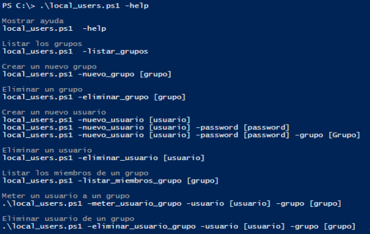
Si creamos un nuevo grupo, y listamos los grupos vemos que aparece.
Si volvemos a intentar crearlo vemos que no nos deja, recoge el error y sácalo por pantalla como se muestra a continuación.
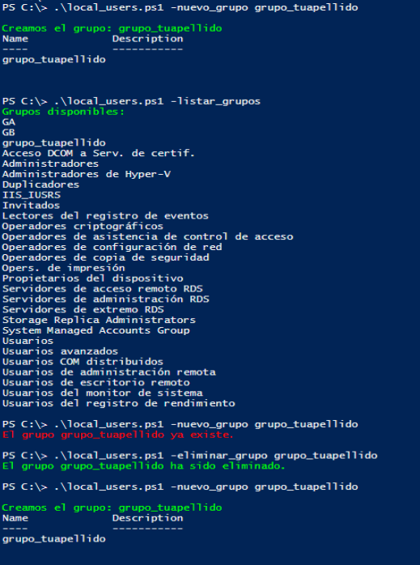
Finalmente crea el grupo grupo_tuapellido
En el caso de intentar borrar un grupo que no existe haz que saque el mensaje por pantalla:
Si creamos un nuevo usuario llamado tunombre, se creara con la contraseña
@lumn0Después crea un usuario llamado tunombre1 con una contraseña que no cumpla con las políticas de seguridad y haz que saque el error que muestra en el pantallazo sin crear el usuario.
Vuelve a crear el usuario tunombre1 con una contraseña que cumpla con las políticas de seguridad
Crear el usuario tunombre2 con una contraseña que cumpla con las políticas de seguridad en el grupo que no existe G2, en este caso el script deberá crear el grupo de forma automática.
Crear el usuario tunombre3 con una contraseña que cumpla con las políticas de seguridad en el grupo que ahora si existe G2.
Por ultimo lista los miembros del grupo G2
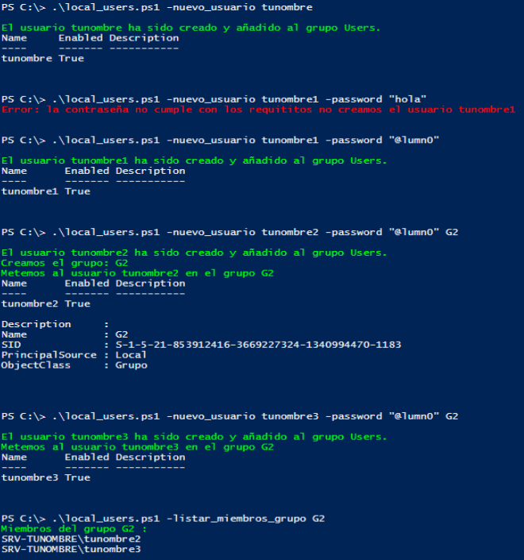
Mete al usuario tunombre3 en grupo G3 que no existe sin poner -usuario ni -grupo, haz que salga el mensaje de error.
Mete al usuario tunombre3 en grupo G3 que no existe sin poner -grupo, haz que salga el mensaje de error.
Mete al usuario tunombre3 en grupo G3 haz que salga el mensaje de error.
Crea el grupo G3 y mete finalmente al usuario tunombre3 en grupo G3.
Lista los usuarios del grupo G3
Elimina el usuario tunombre3 del grupo G3 (haz que se recojan los mismo errores cuando eliminamos usuarios de un grupo que cuando los metemos)
Lista los usuarios del grupo G3 y G2
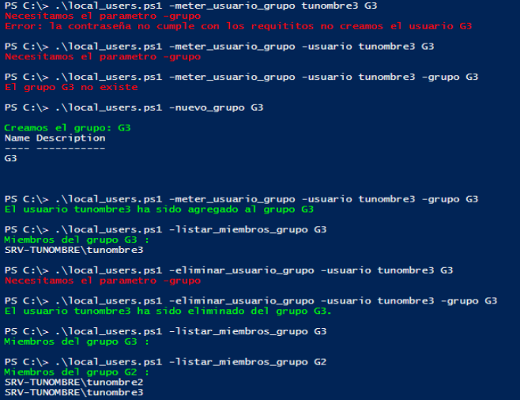
Por ultimo ejecuta el script test_local_users.ps1. para probar el script
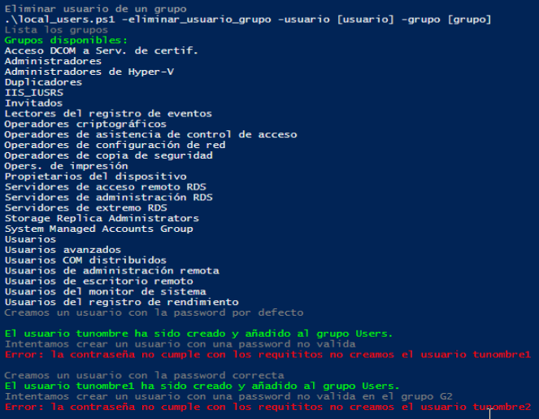
param (
[string]$password = "@lumn0",
[string]$nuevo_usuario,
[string]$grupo, #cuando creamos un nuevo usuario lo metemos dentro de este grupo si existe si no lo creamos, tambien para añadir y quitar usuarios del grupo
[string]$usuario, #lo usasmos para añadir usuarios y quitar usuarios del grupo
[string]$listar_miembros_grupo,
[string]$nuevo_grupo,
[string]$eliminar_grupo,
[string]$eliminar_usuario,
[switch]$eliminar_usuario_grupo,
[switch]$meter_usuario_grupo,
[switch]$help,
[switch]$listar_usuarios,
[switch]$listar_grupos
)
function help {
Write-Host ""
Write-Host "Mostrar ayuda" -ForegroundColor Gray
Write-Host "local_users.ps1 -help"
Write-Host ""
Write-Host "Listar los grupos" -ForegroundColor Gray
Write-Host "local_users.ps1 -listar_grupos"
Write-Host ""
Write-Host "Crear un nuevo grupo" -ForegroundColor Gray
Write-Host "local_users.ps1 -nuevo_grupo [grupo]"
Write-Host ""
Write-Host "Eliminar un grupo" -ForegroundColor Gray
Write-Host "local_users.ps1 -eliminar_grupo [grupo]"
Write-Host ""
Write-Host "Crear un nuevo usuario" -ForegroundColor Gray
Write-Host "local_users.ps1 -nuevo_usuario [usuario]"
Write-Host "local_users.ps1 -nuevo_usuario [usuario] -password [password]"
Write-Host "local_users.ps1 -nuevo_usuario [usuario] -password [password] -grupo [Grupo]"
Write-Host ""
Write-Host "Eliminar un usuario" -ForegroundColor Gray
Write-Host "local_users.ps1 -eliminar_usuario [usuario]"
Write-Host ""
Write-Host "Listar los miembros de un grupo" -ForegroundColor Gray
Write-Host "local_users.ps1 -listar_miembros_grupo [grupo]"
Write-Host ""
Write-Host "Meter un usuario a un grupo" -ForegroundColor Gray
Write-Host ".\local_users.ps1 -meter_usuario_grupo -usuario [usuario] -grupo [grupo]"
Write-Host ""
Write-Host "Eliminar usuario de un grupo" -ForegroundColor Gray
Write-Host ".\local_users.ps1 -eliminar_usuario_grupo -usuario [usuario] -grupo [grupo]"
}
function Listar_Grupos {
Write-Host "Grupos disponibles:" -ForegroundColor Green
Get-LocalGroup | ForEach-Object { Write-Host $_.Name }
}
function Listar_MiembrosDeGrupo {
if (Get-LocalGroup -Name $listar_miembros_grupo -ErrorAction SilentlyContinue) {
Write-Host "Miembros del grupo $listar_miembros_grupo :" -ForegroundColor Green
Get-LocalGroupMember -Group $listar_miembros_grupo | ForEach-Object { Write-Host $_.Name }
} else {
Write-Host "El grupo $listar_miembros_grupo no existe." -ForegroundColor Red
}
}
function Crear_Grupo {
if (Get-LocalGroup -Name $nuevo_grupo -ErrorAction SilentlyContinue) {
Write-Host "El grupo $nuevo_grupo ya existe." -ForegroundColor Red
} else {
New-LocalGroup -Name $nuevo_grupo
Write-Host "Creamos el grupo: $nuevo_grupo" -ForegroundColor Green
}
}
function Eliminar_Grupo {
if (Get-LocalGroup -Name $eliminar_grupo -ErrorAction SilentlyContinue) {
Remove-LocalGroup -Name $eliminar_grupo
Write-Host "El grupo $eliminar_grupo ha sido eliminado." -ForegroundColor Green
} else {
Write-Host "El grupo $eliminar_grupo no existe." -ForegroundColor Red
}
}
function Meter_Usuario_Grupo {
if ([String]::IsNullOrEmpty($grupo)){
Write-Host "Necesitamos el parametro -grupo" -ForegroundColor Red
}elseif ([String]::IsNullOrEmpty($usuario)){
Write-Host "Necesitamos el parametro -usuario" -ForegroundColor Red
}elseif (-not (Get-LocalGroup -Name $grupo -ErrorAction SilentlyContinue)) {
Write-Host "El grupo $grupo no existe" -ForegroundColor Red
}elseif (-not (Get-LocalUser -Name $usuario -ErrorAction SilentlyContinue)) {
Write-Host "El usuario $usuario no existe" -ForegroundColor Red
} else {
Add-LocalGroupMember -Group $grupo -Member $usuario
Write-Host "El usuario $usuario ha sido agregado al grupo $grupo" -ForegroundColor Green
}
}
function Eliminar_Usuario_Grupo {
if ([String]::IsNullOrEmpty($grupo)){
Write-Host "Necesitamos el parametro -grupo" -ForegroundColor Red
}elseif ([String]::IsNullOrEmpty($usuario)){
Write-Host "Necesitamos el parametro -usuario" -ForegroundColor Red
}elseif (-not (Get-LocalGroup -Name $grupo -ErrorAction SilentlyContinue)) {
Write-Host "El grupo $grupo no existe" -ForegroundColor Red
}elseif (-not (Get-LocalUser -Name $usuario -ErrorAction SilentlyContinue)) {
Write-Host "El usuario $usuario no existe" -ForegroundColor Red
} else {
Remove-LocalGroupMember -Group $grupo -Member $usuario
Write-Host "El usuario $usuario ha sido eliminado del grupo $grupo." -ForegroundColor Green
}
}
function Listar_Usuarios {
Write-Host "Usuarios en el sistema:" -ForegroundColor Green
Get-LocalUser | ForEach-Object { Write-Host $_.Name }
}
function Crear_Usuario {
$ErrorActionPreference="Stop"
if (Get-LocalUser -Name $nuevo_usuario -ErrorAction SilentlyContinue) {
Write-Host "El usuario $nuevo_usuario ya existe." -ForegroundColor Red
} else {
$usuario_creado=$True
try{
$cadena_secure_string = $password | ConvertTo-SecureString -AsPlainText -Force
New-LocalUser -Name $nuevo_usuario -Password $cadena_secure_string -FullName $nuevo_usuario
Write-Host "El usuario $nuevo_usuario ha sido creado y añadido al grupo Users." -ForegroundColor Green
}catch{
$usuario_creado=$False
Write-Host "Error: la contraseña no cumple con los requititos no creamos el usuario $nuevo_usuario " -ForegroundColor Red
}
if($usuario_creado){
# Para que los usuarios puedan iniciar sesión con entorno gráfico
# Add-LocalGroupMember -Group "Users" -Member $nuevo_usuario
if (-not [String]::IsNullOrEmpty($grupo)){
if (-not (Get-LocalGroup -Name $grupo -ErrorAction SilentlyContinue)) {
New-LocalGroup -Name $grupo
Write-Host "Creamos el grupo: $grupo" -ForegroundColor Green
}
Add-LocalgroupMember -Group $grupo -Member $nuevo_usuario
Write-Host "Metemos al usuario $nuevo_usuario en el grupo $grupo" -ForegroundColor Green
}
}
}
$ErrorActionPreference="Continue"
}
function Eliminar_Usuario {
if (Get-LocalUser -Name $eliminar_usuario -ErrorAction SilentlyContinue) {
Remove-LocalUser -Name $eliminar_usuario
Write-Host "El usuario $eliminar_usuario ha sido eliminado." -ForegroundColor Green
} else {
Write-Host "El usuario $eliminar_usuario no existe." -ForegroundColor Red
}
}
if ($help){help}
if ($listar_grupos){Listar_Grupos}
if (-not [String]::IsNullOrEmpty($listar_miembros_grupo)){Listar_MiembrosDeGrupo}
if (-not [String]::IsNullOrEmpty($nuevo_grupo)){Crear_Grupo}
if (-not [String]::IsNullOrEmpty($eliminar_grupo)){Eliminar_Grupo}
if ($meter_usuario_grupo){Meter_Usuario_Grupo}
if ($eliminar_usuario_grupo){Eliminar_Usuario_Grupo}
if ($listar_usuarios){Listar_Usuarios}
if (-not [String]::IsNullOrEmpty($nuevo_usuario)){Crear_Usuario}
if (-not [String]::IsNullOrEmpty($eliminar_usuario)){Eliminar_Usuario}
#function prompt { "PS C:\> "}
AD.ps1#
Crea un script llamado AD.ps1, que cumpla las siguientes condiciones
Instala el Active directory utiliza como nombre de dominio : tunombre.local
Haz que toda la decencia con el nombre del dominio dentro del script se haga con las siguientes variables:
$dirAD="DC=tunombre,DC=local",$mail="@tunombre.local"Si ejecutamos:
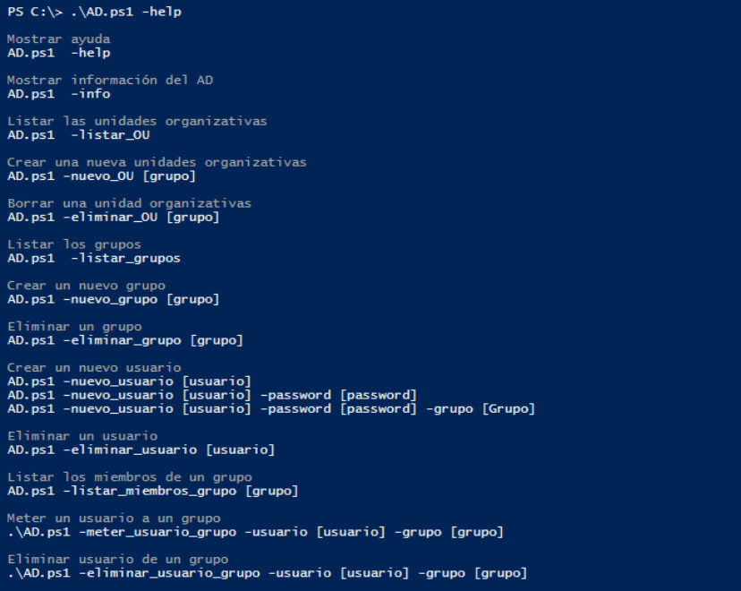
Si ejecutamos:
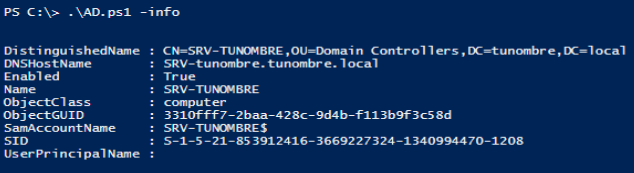
Haz que cree, borre y liste las unidades organizativas, si intenta crearlas y ya existe haz que salga un error por pantalla, en el caso de que intente eliminarlas y no existan haz que salga otro error por pantalla.
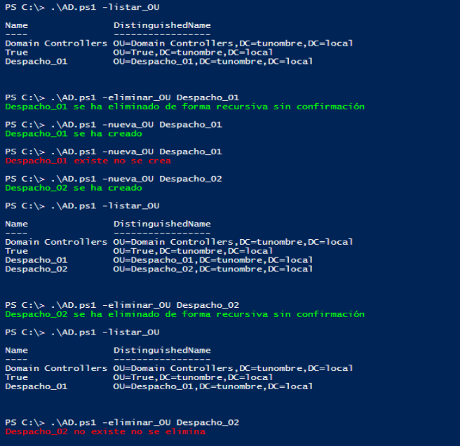
Haz que cree, borre y liste los grupos del AD, si intenta crearlos y ya existe haz que salga un error por pantalla, en el caso de que intente eliminarlas y no existan haz que salga otro error por pantalla.
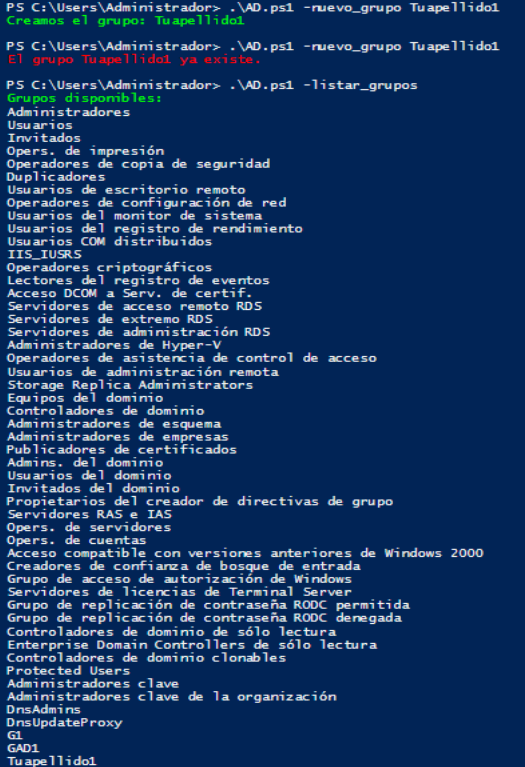
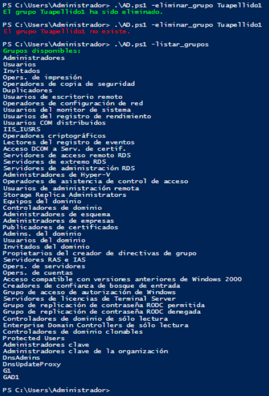
Haz que cree, borre y liste los usuarios del AD, si intenta crearlos y ya existe haz que salga un error por pantalla, en el caso de que intente eliminarlas y no existan haz que salga otro error por pantalla, al igual que antes si intenta crear usuarios con una contraseña insegura que de te un error, si intenta crearlo en un grupo que no existe que cree el grupo antes:
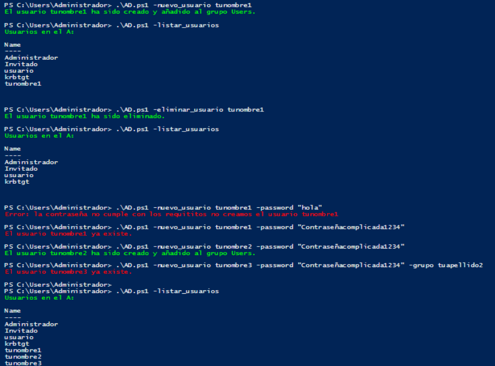
Por ultimo ejecuta el script test_AD.ps1 para probar el script
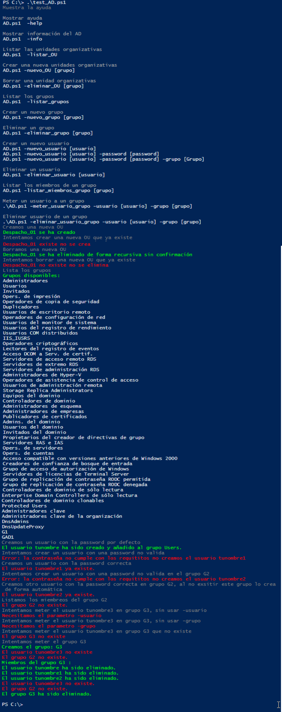
param (
[string]$password = "@lumn01234",
[string]$nuevo_usuario,
[string]$grupo, #cuando creamos un nuevo usuario lo metemos dentro de este grupo si existe si no lo creamos, tambien para añadir y quitar usuarios del grupo
[string]$usuario, #lo usasmos para añadir usuarios y quitar usuarios del grupo
[string]$listar_miembros_grupo,
[string]$nuevo_grupo,
[string]$eliminar_grupo,
[string]$eliminar_usuario,
[switch]$eliminar_usuario_grupo,
[switch]$meter_usuario_grupo,
[switch]$help,
[switch]$listar_usuarios,
[switch]$listar_grupos,
[switch]$info,
[string]$nueva_OU ,
[string]$eliminar_OU,
[switch]$listar_OU
)
$dirAD="DC=tunombre,DC=local"
$mail="@tunombre.local"
function Info { Get-ADComputer -Filter * }
function help {
Write-Host ""
Write-Host "Mostrar ayuda" -ForegroundColor Gray
Write-Host "AD.ps1 -help"
Write-Host ""
Write-Host "Mostrar información del AD" -ForegroundColor Gray
Write-Host "AD.ps1 -info"
Write-Host ""
Write-Host "Listar las unidades organizativas" -ForegroundColor Gray
Write-Host "AD.ps1 -listar_OU"
Write-Host ""
Write-Host "Crear una nueva unidades organizativas" -ForegroundColor Gray
Write-Host "AD.ps1 -nuevo_OU [grupo]"
Write-Host ""
Write-Host "Borrar una unidad organizativas" -ForegroundColor Gray
Write-Host "AD.ps1 -eliminar_OU [grupo]"
Write-Host ""
Write-Host "Listar los grupos" -ForegroundColor Gray
Write-Host "AD.ps1 -listar_grupos"
Write-Host ""
Write-Host "Crear un nuevo grupo" -ForegroundColor Gray
Write-Host "AD.ps1 -nuevo_grupo [grupo]"
Write-Host ""
Write-Host "Eliminar un grupo" -ForegroundColor Gray
Write-Host "AD.ps1 -eliminar_grupo [grupo]"
Write-Host ""
Write-Host "Crear un nuevo usuario" -ForegroundColor Gray
Write-Host "AD.ps1 -nuevo_usuario [usuario]"
Write-Host "AD.ps1 -nuevo_usuario [usuario] -password [password]"
Write-Host "AD.ps1 -nuevo_usuario [usuario] -password [password] -grupo [Grupo]"
Write-Host ""
Write-Host "Eliminar un usuario" -ForegroundColor Gray
Write-Host "AD.ps1 -eliminar_usuario [usuario]"
Write-Host ""
Write-Host "Listar los miembros de un grupo" -ForegroundColor Gray
Write-Host "AD.ps1 -listar_miembros_grupo [grupo]"
Write-Host ""
Write-Host "Meter un usuario a un grupo" -ForegroundColor Gray
Write-Host ".\AD.ps1 -meter_usuario_grupo -usuario [usuario] -grupo [grupo]"
Write-Host ""
Write-Host "Eliminar usuario de un grupo" -ForegroundColor Gray
Write-Host ".\AD.ps1 -eliminar_usuario_grupo -usuario [usuario] -grupo [grupo]"
}
function Listar_Grupos {
Write-Host "Grupos disponibles:" -ForegroundColor Green
Get-ADGroup -Filter * | ForEach-Object { Write-Host $_.Name }
}
function Listar_MiembrosDeGrupo {
if (Get-ADGroup -Filter "Name -eq '$listar_miembros_grupo'"){
Write-Host "Miembros del grupo $listar_miembros_grupo :" -ForegroundColor Green
Get-ADGroupMember -Identity $listar_miembros_grupo
} else {
Write-Host "El grupo $listar_miembros_grupo no existe." -ForegroundColor Red
}
}
function Crear_Grupo {
if (Get-ADGroup -Filter "Name -eq '$nuevo_grupo'") {
Write-Host "El grupo $nuevo_grupo ya existe." -ForegroundColor Red
} else {
New-ADGroup -DisplayName $nuevo_grupo -Name $nuevo_grupo -GroupScope DomainLocal -GroupCategory Security -Path $dirAD
Write-Host "Creamos el grupo: $nuevo_grupo" -ForegroundColor Green
}
}
function Eliminar_Grupo {
if (Get-ADGroup -Filter "Name -eq '$eliminar_grupo'") {
Remove-ADGroup -Identity $eliminar_grupo -Confirm:$false
Write-Host "El grupo $eliminar_grupo ha sido eliminado." -ForegroundColor Green
} else {
Write-Host "El grupo $eliminar_grupo no existe." -ForegroundColor Red
}
}
function Meter_Usuario_Grupo {
if ([String]::IsNullOrEmpty($grupo)){
Write-Host "Necesitamos el parametro -grupo" -ForegroundColor Red
}elseif ([String]::IsNullOrEmpty($usuario)){
Write-Host "Necesitamos el parametro -usuario" -ForegroundColor Red
}elseif (-not (Get-ADGroup -Filter "Name -eq '$grupo'")) {
Write-Host "El grupo $grupo no existe" -ForegroundColor Red
}elseif (-not (Get-ADUser -Filter "Name -eq '$usuario'")) {
Write-Host "El usuario $usuario no existe" -ForegroundColor Red
} else {
Add-ADGroupMember -Identity $grupo -Members $usuario
Add-LocalGroupMember -Group $grupo -Member $usuario
Write-Host "El usuario $usuario ha sido agregado al grupo $grupo" -ForegroundColor Green
}
}
function Eliminar_Usuario_Grupo {
if ([String]::IsNullOrEmpty($grupo)){
Write-Host "Necesitamos el parametro -grupo" -ForegroundColor Red
}elseif ([String]::IsNullOrEmpty($usuario)){
Write-Host "Necesitamos el parametro -usuario" -ForegroundColor Red
}elseif (-not (Get-ADGroup -Filter "Name -eq '$grupo'")) {
Write-Host "El grupo $grupo no existe" -ForegroundColor Red
}elseif (-not (Get-ADUser -Filter "Name -eq '$nuevo_usuario'")) {
Write-Host "El usuario $usuario no existe" -ForegroundColor Red
} else {
Remove-ADGroupMember -Identity $grupo -Members $usuario
Write-Host "El usuario $usuario ha sido eliminado del grupo $grupo." -ForegroundColor Green
}
}
function Listar_Usuarios {
Write-Host "Usuarios en el A:" -ForegroundColor Green
Get-ADUser -Filter * | Select-Object Name
}
function Crear_Usuario {
$ErrorActionPreference="Stop"
if (Get-ADUser -Filter "Name -eq '$nuevo_usuario'") {
Write-Host "El usuario $nuevo_usuario ya existe." -ForegroundColor Red
} else {
$usuario_creado=$True
try{
$cadena_secure_string = $password | ConvertTo-SecureString -AsPlainText -Force
New-AdUser -Name $nuevo_usuario -SamAccountName $nuevo_usuario -UserPrincipalName $nuevo_usuario$mail -GivenName $nuevo_usuario -AccountPassword $cadena_secure_string -Enabled $True
Write-Host "El usuario $nuevo_usuario ha sido creado y añadido al grupo Users." -ForegroundColor Green
}catch{
$usuario_creado=$False
Write-Host "Error: la contraseña no cumple con los requititos no creamos el usuario $nuevo_usuario " -ForegroundColor Red
}
if($usuario_creado){
# Para que los usuarios puedan iniciar sesión con entorno gráfico
# Add-LocalGroupMember -Group "Users" -Member $nuevo_usuario
if (-not [String]::IsNullOrEmpty($grupo)){
if(-not (Get-ADGroup -Filter "Name -eq '$grupo'")) {
New-ADGroup -DisplayName $grupo -Name $grupo -GroupScope DomainLocal -GroupCategory Security -Path $dirAD
Write-Host "Creamos el grupo: $grupo" -ForegroundColor Green
}
Add-ADGroupMember -Identity Group $grupo -Member $nuevo_usuario
Write-Host "Metemos al usuario $nuevo_usuario en el grupo $grupo" -ForegroundColor Green
}
}
}
$ErrorActionPreference="Continue"
}
function Eliminar_Usuario {
if (Get-ADUser -Filter "Name -eq '$eliminar_usuario'") {
Remove-ADUser -Identity $eliminar_usuario -Confirm:$false
Write-Host "El usuario $eliminar_usuario ha sido eliminado." -ForegroundColor Green
} else {
Write-Host "El usuario $eliminar_usuario no existe." -ForegroundColor Red
}
}
function Crear_OU {
if(Get-ADOrganizationalUnit -Filter "Name -eq '$nueva_OU'"){
Write-Host "$nueva_OU existe no se crea" -ForegroundColor Red
}else{
New-ADOrganizationalUnit -DisplayName $nueva_OU -Name $nueva_OU -path "DC=tunombre,DC=local"
Write-Host "$nueva_OU se ha creado" -ForegroundColor Green
}
}
function Eliminar_OU {
if(-not (Get-ADOrganizationalUnit -Filter "Name -eq '$eliminar_OU'")){
Write-Host "$eliminar_OU no existe no se elimina" -ForegroundColor Red
}else{
Set-ADOrganizationalUnit -Identity "OU=$eliminar_OU,DC=tunombre,DC=local" -ProtectedFromAccidentalDeletion $False
Remove-ADOrganizationalUnit -Identity "OU=$eliminar_OU,DC=tunombre,DC=local" -Recursive -Confirm:$false
Write-Host "$eliminar_OU se ha eliminado de forma recursiva sin confirmación" -ForegroundColor Green
}
}
if ($help){help}
if ($listar_grupos){Listar_Grupos}
if (-not [String]::IsNullOrEmpty($listar_miembros_grupo)){Listar_MiembrosDeGrupo}
if (-not [String]::IsNullOrEmpty($nuevo_grupo)){Crear_Grupo}
if (-not [String]::IsNullOrEmpty($eliminar_grupo)){Eliminar_Grupo}
if ($meter_usuario_grupo){Meter_Usuario_Grupo}
if ($eliminar_usuario_grupo){Eliminar_Usuario_Grupo}
if ($listar_usuarios){Listar_Usuarios}
if (-not [String]::IsNullOrEmpty($nuevo_usuario)){Crear_Usuario}
if (-not [String]::IsNullOrEmpty($eliminar_usuario)){Eliminar_Usuario}
#--AD--
if ($info){Info}
if (-not [String]::IsNullOrEmpty($nueva_OU)){Crear_OU}
if (-not [String]::IsNullOrEmpty($eliminar_OU)){Eliminar_OU}
if ($listar_OU){
Get-ADOrganizationalUnit -LDAPFilter "(name=*)" | FT Name,DistinguishedName
}
#function prompt { "PS C:\> "}
Administración remota#
remoto.ps1#
La administración remota es la razón de ser de PowerShell (de hecho su tecnología se llama PowerShell Remoting): ejecutar comandos en muchas máquinas a la vez sin tocar sus teclados. Es el equivalente Windows de lo que hicimos en GNU/Linux con rsync_usuarios.sh sobre ssh.
Este ejercicio necesita un laboratorio de máquinas virtuales, no se puede hacer en un único equipo:
Tres clones enlazados de la "MV Windows Server":
compute-0-0(desde donde administramos) y los clientescompute-0-1ycompute-0-2, en la misma red y que se resuelvan por nombre (o añade sus IPs aC:\Windows\System32\drivers\etc\hosts).En cada cliente, habilita WinRM ejecutando como Administrador:
Enable-PSRemoting -Force
Como las máquinas no están en un dominio, en compute-0-0 hay que declarar los clientes como confiables:
Set-Item WSMan:\localhost\Client\TrustedHosts -Value "compute-0-1,compute-0-2"
(si el laboratorio ya está dentro del AD de los ejercicios anteriores, este paso no hace falta: la confianza la da el dominio)
Comprueba la conexión con
Test-WSMan compute-0-1.
Con el laboratorio funcionando, crea un script llamado remoto.ps1 que reciba la lista de equipos como parámetro (por defecto los dos clientes) y:
Con
-infomuestre de cada equipo su nombre, los GB libres en C: y el número de procesos.Con
-comando "<comando>"ejecute ese comando en todos los equipos, mostrando de cuál es cada salida:.\remoto.ps1 -info === compute-0-1 === COMPUTE-0-1 : 12,3 GB libres en C:, 87 procesos === compute-0-2 === COMPUTE-0-2 : 11,8 GB libres en C:, 92 procesos .\remoto.ps1 -comando "Get-LocalUser | Select-Object Name"
Consejos:
Get-Credentialpide las credenciales una sola vez y se reutilizan para todos los equipos.Invoke-Command -ComputerName <equipo> -Credential $credencial -ScriptBlock { ... }ejecuta el bloque en la máquina remota: todo lo que hay dentro de las llaves corre allí, no en tu equipo.Para convertir el texto de
-comandoen código ejecutable:[scriptblock]::Create($comando).Cuando funcione, piensa en las posibilidades: el script crear_usuarios_grupos_csv.ps1 ejecutado en 20 equipos a la vez es un
foreachde distancia.
# remoto.ps1
# Necesita el laboratorio de VMs con WinRM habilitado, ver el enunciado
param (
[string[]]$equipos = @("compute-0-1", "compute-0-2"),
[switch]$info,
[string]$comando
)
# pide la contraseña una sola vez para todos los equipos
$credencial = Get-Credential -UserName "Administrador" -Message "Credenciales del administrador remoto"
if ($info) {
foreach ($equipo in $equipos) {
Write-Host "=== $equipo ===" -ForegroundColor Green
Invoke-Command -ComputerName $equipo -Credential $credencial -ScriptBlock {
"{0} : {1} GB libres en C:, {2} procesos" -f $env:COMPUTERNAME,
[math]::Round((Get-PSDrive -Name C).Free/1GB, 1),
(Get-Process).Count
}
}
}
if ($comando) {
foreach ($equipo in $equipos) {
Write-Host "=== $equipo ===" -ForegroundColor Green
# convertimos el texto recibido en un bloque de código ejecutable
Invoke-Command -ComputerName $equipo -Credential $credencial `
-ScriptBlock ([scriptblock]::Create($comando))
}
}